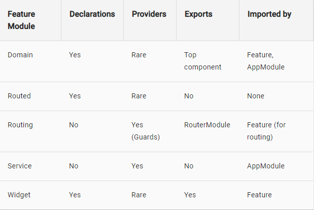

Theme
Description
Example
Bootstrapping
angular.json
CLI configuration defaults for all projects in the workspace, including configuration options for build, serve, and test tools that the CLI uses
{
"$schema": "./node_modules/@angular/cli/lib/config/schema.json",
"version": 1,
"newProjectRoot": "projects",
"projects": {
"practiceCLI": {
"root": "",
"sourceRoot": "src",
"projectType": "application",
"prefix": "app",
"schematics": {},
"architect": {
"build": {
"builder": "@angular-devkit/build-angular:browser",
"options": {
"outputPath": "dist/practiceCLI",
"index": "src/index.html",
"main": "src/main.ts",
"polyfills": "src/polyfills.ts",
"tsConfig": "src/tsconfig.app.json",
"assets": [
"src/favicon.ico",
"src/assets"
],
"styles": [
"src/styles.css"
],
"scripts": []
},
"configurations": {
"production": {
"fileReplacements": [
{
"replace": "src/environments/environment.ts",
"with": "src/environments/environment.prod.ts"
}
],
"optimization": true,
"outputHashing": "all",
"sourceMap": false,
"extractCss": true,
"namedChunks": false,
"aot": true,
"extractLicenses": true,
"vendorChunk": false,
"buildOptimizer": true,
"budgets": [
{
"type": "initial",
"maximumWarning": "2mb",
"maximumError": "5mb"
}
]
} } },
"serve": {
"builder": "@angular-devkit/build-angular:dev-server",
"options": {
"browserTarget": "practiceCLI:build"
},
"configurations": {
"production": {
"browserTarget": "practiceCLI:build:production"
} } },
"extract-i18n": {
"builder": "@angular-devkit/build-angular:extract-i18n",
"options": {
"browserTarget": "practiceCLI:build"
} },
"test": {
"builder": "@angular-devkit/build-angular:karma",
"options": {
"main": "src/test.ts",
"polyfills": "src/polyfills.ts",
"tsConfig": "src/tsconfig.spec.json",
"karmaConfig": "src/karma.conf.js",
"styles": [
"src/styles.css"
],
"scripts": [],
"assets": [
"src/favicon.ico",
"src/assets"
]
} },
"lint": {
"builder": "@angular-devkit/build-angular:tslint",
"options": {
"tsConfig": [
"src/tsconfig.app.json",
"src/tsconfig.spec.json"
],
"exclude": [
"**/node_modules/**"
]
} } } },
"practiceCLI-e2e": {
"root": "e2e/",
"projectType": "application",
"prefix": "",
"architect": {
"e2e": {
"builder": "@angular-devkit/build-angular:protractor",
"options": {
"protractorConfig": "e2e/protractor.conf.js",
"devServerTarget": "practiceCLI:serve"
},
"configurations": {
"production": {
"devServerTarget": "practiceCLI:serve:production"
} } },
"lint": {
"builder": "@angular-devkit/build-angular:tslint",
"options": {
"tsConfig": "e2e/tsconfig.e2e.json",
"exclude": [
"**/node_modules/**"
]
} } } } },
"defaultProject": "practiceCLI"
}
package.json
Configures npm package dependencies that are available to all projects in the workspace.
{
"name": "practice-cli",
"version": "0.0.0",
"scripts": {
"ng": "ng",
"start": "ng serve",
"build": "ng build",
"test": "ng test",
"lint": "ng lint",
"e2e": "ng e2e"
},
"private": true,
"dependencies": {
"@angular/animations": "~7.1.0",
"@angular/common": "~7.1.0",
"@angular/compiler": "~7.1.0",
"@angular/core": "~7.1.0",
"@angular/forms": "~7.1.0",
"@angular/platform-browser": "~7.1.0",
"@angular/platform-browser-dynamic": "~7.1.0",
"@angular/router": "~7.1.0",
"core-js": "^2.5.4",
"rxjs": "~6.3.3",
"tslib": "^1.9.0",
"zone.js": "~0.8.26"
},
"devDependencies": {
"@angular-devkit/build-angular": "~0.11.0",
"@angular/cli": "~7.1.3",
"@angular/compiler-cli": "~7.1.0",
"@angular/language-service": "~7.1.0",
"@types/node": "~8.9.4",
"@types/jasmine": "~2.8.8",
"@types/jasminewd2": "~2.0.3",
"codelyzer": "~4.5.0",
"jasmine-core": "~2.99.1",
"jasmine-spec-reporter": "~4.2.1",
"karma": "~3.1.1",
"karma-chrome-launcher": "~2.2.0",
"karma-coverage-istanbul-reporter": "~2.0.1",
"karma-jasmine": "~1.1.2",
"karma-jasmine-html-reporter": "^0.2.2",
"protractor": "~5.4.0",
"ts-node": "~7.0.0",
"tslint": "~5.11.0",
"typescript": "~3.1.6"
}
}
tsconfig.json
Default TypeScript configuration for apps in the workspace, including TypeScript and Angular template compiler options.
{
"compileOnSave": false,
"compilerOptions": {
"baseUrl": "./",
"outDir": "./dist/out-tsc",
"sourceMap": true,
"declaration": false,
"module": "es2015",
"moduleResolution": "node",
"emitDecoratorMetadata": true,
"experimentalDecorators": true,
"importHelpers": true,
"target": "es5",
"typeRoots": [
"node_modules/@types"
],
"lib": [
"es2018",
"dom"
] } }
tslint.json
Default TSLint configuration for apps in the workspace.
TSLint is an extensible static analysis tool that checks TypeScript code for readability,
maintainability, and functionality errors.
{
"rulesDirectory": [
"codelyzer"
],
"rules": {
"arrow-return-shorthand": true,
"callable-types": true,
"class-name": true,
"comment-format": [
true,
"check-space"
],
"curly": true,
"deprecation": {
"severity": "warn"
},
"eofline": true,
"forin": true,
"import-blacklist": [
true,
"rxjs/Rx"
],
"import-spacing": true,
"indent": [
true,
"spaces"
],
"interface-over-type-literal": true,
"label-position": true,
"max-line-length": [
true,
140
],
"member-access": false,
"member-ordering": [
true,
{
"order": [
"static-field",
"instance-field",
"static-method",
"instance-method"
]
}
],
"no-arg": true,
"no-bitwise": true,
"no-console": [
true,
"debug",
"info",
"time",
"timeEnd",
"trace"
],
"no-construct": true,
"no-debugger": true,
"no-duplicate-super": true,
"no-empty": false,
"no-empty-interface": true,
"no-eval": true,
"no-inferrable-types": [
true,
"ignore-params"
],
"no-misused-new": true,
"no-non-null-assertion": true,
"no-redundant-jsdoc": true,
"no-shadowed-variable": true,
"no-string-literal": false,
"no-string-throw": true,
"no-switch-case-fall-through": true,
"no-trailing-whitespace": true,
"no-unnecessary-initializer": true,
"no-unused-expression": true,
"no-use-before-declare": true,
"no-var-keyword": true,
"object-literal-sort-keys": false,
"one-line": [
true,
"check-open-brace",
"check-catch",
"check-else",
"check-whitespace"
],
"prefer-const": true,
"quotemark": [
true,
"single"
],
"radix": true,
"semicolon": [
true,
"always"
],
"triple-equals": [
true,
"allow-null-check"
],
"typedef-whitespace": [
true,
{
"call-signature": "nospace",
"index-signature": "nospace",
"parameter": "nospace",
"property-declaration": "nospace",
"variable-declaration": "nospace"
}
],
"unified-signatures": true,
"variable-name": false,
"whitespace": [
true,
"check-branch",
"check-decl",
"check-operator",
"check-separator",
"check-type"
],
"no-output-on-prefix": true,
"use-input-property-decorator": true,
"use-output-property-decorator": true,
"use-host-property-decorator": true,
"no-input-rename": true,
"no-output-rename": true,
"use-life-cycle-interface": true,
"use-pipe-transform-interface": true,
"component-class-suffix": true,
"directive-class-suffix": true
} }
main.ts
Application starts from this file.
Bootstraps the app, using the root component from the specified NgModule(root).
import { platformBrowserDynamic } from '@angular/platform-browser-dynamic';
platformBrowserDynamic().bootstrapModule(AppModule);
NgModules
@NgModule
Defines a module that contains components, directives, pipes, and providers.
An Angular app needs at least one module that serves as the root module.
As you add features to your app, you should add them in modules.
NgModules are classes decorated with @NgModule.
import { NgModule } from '@angular/core';
// imports
import { BrowserModule } from '@angular/platform-browser';
import { NgModule } from '@angular/core';
import { FormsModule } from '@angular/forms';
import { HttpClientModule } from '@angular/common/http';
import { AppComponent } from './app.component';
import { ItemDirective } from './item.directive';
// @NgModule decorator with its metadata
@NgModule({
declarations: [ AppComponent, ItemDirective ],
imports: [ BrowserModule, FormsModule, HttpClientModule ],
providers: [], bootstrap: [AppComponent]
})
export class AppModule { }
Properties
declarations: [] - List of components, directives, and pipes that belong to this module.
imports: [] - List of modules to import into this module.
Everything from the imported modules is available to declarations of this module.
exports: [] - List of components, directives, and pipes visible
to modules that import this module.
providers: [] - List of dependency injection providers visible both
to the contents of this module and to importers of this module.
entryComponents: [] - List of components not referenced in any reachable template,
for example dynamically created from code.
bootstrap: [] - List of components to bootstrap when this module is bootstrapped.
declarations: [MyRedComponent, MyBlueComponent, MyDatePipe],
imports: [BrowserModule, SomeOtherModule],
exports: [MyRedComponent, MyDatePipe],
providers: [MyService, { provide: ... }],
entryComponents: [SomeComponent, OtherComponent],
bootstrap: [MyAppComponent]
Frequently Used NgModules
BrowserModule - When you want to run your app in a browser (extends CommonModule).
It should be imported once in a root module.
CommonModule - When you want to use NgIf, NgFor.
(not necessary if BrowserModule imported)
FormsModule - When you want to build template driven forms (includes NgModel).
ReactiveFormsModule - When you want to build reactive forms.
RouterModule - When you want to use RouterLink, .forRoot(), and .forChild().
HttpClientModule - When you want to talk to a server.
import { BrowserModule } from '@angular/platform-browser';
import { NgModule } from '@angular/core';
import { FormsModule } from '@angular/forms';
import { HttpClientModule } from '@angular/common/http';
@NgModule({
imports: [ BrowserModule, FormsModule, HttpClientModule ]
})
Feature Modules
A feature module is an organizational best practice, as opposed to a concept of the core Angular API. A feature module delivers a cohesive set of functionality focused on a specific application need such as a user workflow, routing, or forms. While you can do everything within the root module, feature modules help you partition the app into focused areas. A feature module collaborates with the root module and with other modules through the services it provides and the components, directives, and pipes that it shares.
import { NgModule } from '@angular/core';
import { RouterModule, Routes } from '@angular/router';
import { HeroListComponent } from './hero-list/hero-list.component';
import { HeroDetailComponent } from './hero-detail/hero-detail.component';
const heroesRoutes: Routes = [
{ path: 'heroes', component: HeroListComponent },
{ path: 'hero/:id', component: HeroDetailComponent }
];
@NgModule({
imports: [
RouterModule.forChild(heroesRoutes)
],
exports: [
RouterModule
]
})
export class HeroesRoutingModule { }
Types of Feature Modules
Domain feature modules – components module.
Routed feature modules – linked module, doesn’t include anywhere, access only by link.
Routing modules – routing logic.
Service feature modules – global services.
Widget feature modules – export-oriented module.

https://angular.io/guide/module-types
Lazy Loading Feature Modules
There are three main steps to setting up a lazy loaded feature module:
1. Create the feature module.
2. Create the feature module’s routing module.
3. Configure the routes.
https://angular.io/guide/lazy-loading-ngmodules#lazy-loading-feature-modules
const routes: Routes = [
{ path: 'customers', loadChildren: './customers/customers.module#CustomersModule' },
{ path: 'orders', loadChildren: './orders/orders.module#OrdersModule' },
{ path: '', redirectTo: '', pathMatch: 'full' }
];
.forRoot()
.forChild()
https://angular.io/guide/singleton-services#forroot
https://angular.io/guide/lazy-loading-ngmodules#forroot-and-forchild
import { CoreModule } from './core/core.module';
/* . . . */
@NgModule({
imports: [ BrowserModule, ContactModule, CoreModule.forRoot(
{userName: 'Miss Marple'}), AppRoutingModule ],
/* . . . */ })
export class AppModule { }
static forRoot(config: UserServiceConfig): ModuleWithProviders {
return {
ngModule: CoreModule,
providers: [ {provide: UserServiceConfig, useValue: config } ]
}; }
Components
@Component
Declares that a class is a component and provides metadata about the component.
import { Component } from '@angular/core';
@Component({...})
class MyComponent() {}
Properties
selector: '' - selector that identifies this component in a template.
template / templateUrl: '' - Inline template or external template URL of the component's view.
styles / styleUrls : [''] - List of inline CSS styles or external stylesheet URLs
for styling the component’s view.
providers: [] - List of dependency injection providers for this directive and its children.
viewProviders: [] - List of dependency injection providers scoped to this component's view.
selector: 'app-hero',
template: 'Hello {{name}}',
templateUrl: 'my-component.html',
styles: ['.primary {color: red}'],
styleUrls: ['my-component.css'],
providers: [MyService, { provide: ... }],
viewProviders: [MyService, { provide: ... }]
Tips:
Model-View-Controller (MVC) - In Angular, the component plays the part of the controller, and the template represents the view. Helps to get and set DOM (Document Object Model) values dynamically.
Styles
Scope
The styles specified in @Component metadata apply only within the template of that component.
-
Setup
- Styles in component metadata: add a styles array property to the @Component decorator.
- Style files in component metadata: load styles from external CSS files
by adding a styleUrls property to a component's @Component decorator.
- Template inline styles:
embed CSS styles directly into the HTML template by putting them inside <style>tags.
- Template link tags: write <link> tags into the component's HTML template.
- CSS @imports: import CSS files into the CSS files using the standard CSS @import rule.
styles: ['h1 { font-weight: normal; }']
styleUrls: ['./hero-app.component.css']
template: `
<style>
button {
background-color: white;
border: 1px solid #777;
}
</style>
<h3>Controls</h3>
template: `
<link rel="stylesheet" href="../assets/hero-team.component.css">
<h3>Team</h3>
@import './hero-details-box.css';
:host
Use the :host pseudo-class selector to target styles in the element
that hosts the component (as opposed to targeting elements inside the component's template).
-The host element is in a parent component's template.
-Use the function form to apply host styles conditionally
by including another selector inside parentheses after :host.
:host { display: block; border: 1px solid black; }
:host(.active) { border-width: 3px; }
Targets the host element again, but only when it also has the active CSS class.
:host-context()
Sometimes it's useful to apply styles based on some condition outside of a component's view. The :host-context() selector looks for a CSS class in any ancestor of the component host element, up to the document root. The :host-context() selector is useful when combined with another selector.
:host-context(.theme-light) h2 { background-color: #eef; }
applies a background-color style to all <h2> elements inside the component,
only if some ancestor element has the CSS class theme-light.
Lifecycle Hooks
constructor(myService: MyService, ...)
{ ... }
Called before any other lifecycle hook. Use it to inject dependencies, but avoid any serious work here.
-
ngOnChanges(changeRecord)
{ ... }
Called after every change to input properties and before processing content or child views.
The ngOnChanges() method takes an object that maps each changed property name
to a SimpleChange object holding the current and previous property values.
ngOnChanges(changes: SimpleChanges) {
for (let propName in changes) {
let chng = changes[propName];
let cur = JSON.stringify(chng.currentValue);
let prev = JSON.stringify(chng.previousValue);
this.changeLog.push(`${propName}: currentValue = ${cur}, previousValue = ${prev}`);
} }
ngOnChanges(changes: SimpleChanges){
if(changes.justValue && !changes.justValue.currentValue){
console.log(changes.justValue.currentValue);
}
}
ngOnInit()
{ ... }
Called after the constructor, initializing input properties,
and the first call to ngOnChanges.
Commonly used to:
- To perform complex initializations shortly after construction.
- To set up the component after Angular sets the input properties.
-
ngDoCheck()
{ ... }
Called every time that the input properties of a component or a directive are checked.
Use it to extend change detection by performing a custom check.
Use the DoCheck hook to detect and act upon changes that Angular doesn't catch on its own.
-
ngAfterContentInit()
{ ... }
Called after ngOnInit when the component's or directive's content has been initialized.
The following AfterContent hooks take action based on changing values in a content child,
which can only be reached by querying for them via the property decorated with@ContentChild.
-
ngAfterContentChecked()
{ ... }
Called after every check of the component's or directive's content.
The following AfterContent hooks take action based on changing values in a content child,
which can only be reached by querying for them via the property decorated with@ContentChild.
-
ngAfterViewInit()
{ ... }
Called after ngAfterContentInit when the component's views
and child views / the view that a directive is in has been initialized.
The following hooks take action based on changing values within the child view,
which can only be reached by querying for the child view via the property decorated with @ViewChild.
-
ngAfterViewChecked()
{ ... }
Called after every check of the component's views
and child views / the view that a directive is in.
The following hooks take action based on changing values within the child view,
which can only be reached by querying for the child view via the property decorated with @ViewChild.
-
ngOnDestroy()
{ ... }
Called once, before the instance is destroyed.
Commonly used to:
- Put cleanup logic.
- This is the time to notify another part of the application that the component is going away.
- This is the place to free resources that won't be garbage collected automatically.
Unsubscribe from Observables and DOM events. Stop interval timers.
Unregister all callbacks that this directive registered with global or application services.
-
Template Syntax
Theory:
HTML attribute vs. DOM property:
The HTML attribute and the DOM property are not the same thing, even when they have the same name.
Attributes initialize DOM properties and then they are done.
Property values can change; attribute values can't.
A few HTML attributes have 1:1 mapping to properties. id is one example.
Some HTML attributes don't have corresponding properties. colspan is one example.
Some DOM properties don't have corresponding attributes. textContent is one example.
In the world of Angular, the only role of attributes is to initialize element and directive state.
When you write a data binding, you're dealing exclusively with properties and events of the target object.
HTML attributes effectively disappear.
{{ … }}
Interpolation - is a special syntax that Angular converts into a property binding:
- Binding to the property, not attribute
- The text between the braces is a template expression that Angular first evaluates and then converts to a string.
- The expression can invoke methods of the host component such as getVal()
- Finally, it assigns this composite interpolated result to an element or directive property.
Template Expression context:
- refer to properties of the Component, where it’s called
- refer to properties of the template's context such as a template input variable (let hero)
or a template reference variable (#heroInput).
- Template expressions cannot refer to anything in the global namespace (except undefined).
They can't refer to window or document. They can't call console.log or Math.max.
Template Expression restriction:
- assignments (=, +=, -=, ...)
- new
- chaining expressions with ; or ,
- increment and decrement operators (++ and --)
- no support for the bitwise operators | and &
Guideline:
- No visible side effects (A template expression should not change any application state other
than the value of the target property.)
- Quick execution (Angular executes template expressions after every change detection cycle.)
- Simplicity
- Idempotence (always returns exactly the same thing until one of its dependent values changes.)
<p>My current hero is {{currentHero.name}}</p>
<img src="{{heroImageUrl}}" style="height:30px">
<p>The sum of 1 + 1 is {{1 + 1}}</p>
<p>The sum of 1 + 1 is not {{1 + 1 + getVal()}}</p>
<div *ngFor="let hero of heroes">{{hero.name}}</div>
<input #heroInput> {{heroInput.value}}
( | )
The pipe operator.
- Pipes are simple functions that accept an input value and return a transformed value.
- The pipe operator passes the result of an expression on the left to a pipe function on the right.
- You can chain expressions through multiple pipes
- And you can also apply parameters to a pipe
<div>Title through uppercase pipe: {{title | uppercase}}</div>
<div> Title through a pipe chain: {{title | uppercase | lowercase}} </div>
<div>Birthdate: {{currentHero?.birthdate | date:'longDate'}}</div>
(?.)
The safe navigation operator.
- It is a fluent and convenient way to guard against null and undefined values in property paths.
- The expression bails out when it hits the first null value.
The display is blank, but the app keeps rolling without errors.
- It works perfectly with long property paths such as a?.b?.c?.d.
The null hero's name is {{nullHero?.name}}
(!)
The non-null assertion operator.
- The type checker also throws an error if it can't determine whether a variable will be null
or undefined at runtime. You may know that can't happen but the type checker doesn't know.
You tell the type checker that it can't happen by applying this post-fix operator.
- it does not guard against null or undefined.
<div *ngIf="hero"> The hero's name is {{hero!.name}} </div>
it prevents TypeScript from reporting that hero.name might be null or undefined.
$any( )
The $any type cast function.
- A binding expression will be reported as a type error and it is not possible
or difficult to fully specify the type. You will use it to silence the error.
- The $any cast function can be used in conjunction with this to allow access
to undeclared members of the component.
<div> The hero's marker is {{$any(hero).marker}} </div>
In this example, when the Angular compiler turns your template into TypeScript code,
it prevents TypeScript from reporting that marker is not a member of the Hero interface.
<div> Undeclared members is {{$any(this).member}} </div>
#var
Template reference variables - is often a reference to a DOM element within a template.
It can also be a reference to an Angular component or directive or a web component.
- You can refer to a template reference variable anywhere in the template.
<input #phone placeholder="phone number">
<button (click)="callPhone(phone.value)">Call</button>
<form (ngSubmit)="onSubmit(heroForm)" #heroForm="ngForm">
…
<button type="submit" [disabled]="!heroForm.form.valid">Submit</button> </form>
<div [hidden]="!heroForm.form.valid"> {{submitMessage}} </div>
[target property]="value"
Property binding:
Target:
Element property
Component property
Directive property
- Angular looks first to see if the name is a property of a known directive (ngClass)
- The target name is always the name of a property,
even when it appears to be the name of something else. (src)
- The template expression should evaluate to the type of value expected
by the target property. (number, string, boolean, object)
- Property without brackets - fixed string, not a template expression.
<input [value]="firstName">
Binds property value to the result of expression firstName.
<img [src]="heroImageUrl">
binding the src property of an image element to a component's heroImageUrl property
<button [disabled]="isUnchanged">Cancel is disabled</button>
disabling a button when the component says that it isUnchanged:
<app-hero-detail [hero]="currentHero"></app-hero-detail>
setting the model property of a custom component (a great way for parent and child components to communicate):
<div [ngClass]="{'special': isSpecial}"></div>
setting a property of a directive
<app-hero-detail prefix="You are my"></app-hero-detail>
Fixed string
[attr.role]="value"
Attribute binding:
You must use attribute binding when there is no element property to bind.
<div [attr.role]="myAriaRole">
Binds attribute role to the result of expression myAriaRole.
<tr><td [attr.colspan]="1 + 1">One-Two</td></tr>
<button [attr.aria-label]="actionName">{{actionName}} with Aria</button>
[class.class-name]="true/false"
Class binding:
You can add and remove CSS class names from an element's class attribute.
Best to use, when you need to work with single class.
<div [class.extra-sparkle]="isDelightful">
Binds the presence of the CSS class extra-sparkle on the element
to the truthiness of the expression isDelightful.
<div [class.special]="isSpecial">The class binding is special</div> True/add class
<div class="special" [class.special]="!isSpecial">This one is not so special</div> False/ remove class
[style.style-property.units]="value"
Style binding:
You can set inline styles with a style binding.
Units are optional.
Best to use, when you need to work with single style.
<div [style.width.px]="mySize">
Binds style property width to the result of expression mySize in pixels.
<button [style.color]="isSpecial ? 'red' : 'green'">
<button [style.font-size.em]="isSpecial ? 3 : 1" >Big</button>
<button [style.font-size.%]="!isSpecial ? 150 : 50" >Small</button>
(click)="function-name($event)"
Event binding:
Target:
Element property
Component property
Directive property
Uses from an element to a component way.
A template statement responds to an event raised by a binding target
such as an element, component, or directive.
Template Statements restriction:
- assignments (=, +=, -=, ...)
- new
- increment and decrement operators (++ and --)
- no support for the bitwise operators | and &
- the template expression operators
Template Statements context:
- refers to an event handling method of the component instance.
- may also refer to properties of the template's own context:
the template $event object, a template input variable (let hero),
and a template reference variable (#heroForm) are passed to an event handling method of the component.
- cannot refer to anything in the global namespace. They can't refer to windowor document.
They can't call console.log or Math.max.
-The binding conveys information about the event, including data values, through an event object named $event. If the target event is a native DOM element event, then $event is a DOM event object, with properties such as target and target.value.
- DOM events carry a payload of information that may be useful to the component.
These payload stores in $event object.
- The properties of an $event object vary depending on the type of DOM event.
- All standard DOM event objects have a target property,
a reference to the element that raised the event.
- event.target.value - returns the current contents of that element. (<input>)
- event.key - will receive every entered key
- Using template reference variables (#var) is a best practice.
These variables provide direct access to an element from within the template.
- The shortest way to generate some event for updating bindings is - (keyup)="0".
- (keyup.enter) - Angular calls the event handler only when the user presses Enter.
- (blur) event will work when focus goes off
- event can be bind to many template statements
<button (click)="readRainbow($event)">
Calls method readRainbow when a click event is triggered
on this button element (or its children) and passes in the event object.
<button (click)="deleteHero()">Delete hero</button>
<button (click)="onSave($event)">Save</button>
<button *ngFor="let hero of heroes"(click)="deleteHero(hero)">{{hero.name}}</button>
<form #heroForm (ngSubmit)="onSubmit(heroForm)"> ... </form>
<button (click)="onSave()">Save</button>
<app-hero-detail (deleteRequest)="deleteHero()"></app-hero-detail>
<div (myClick)="clicked=$event" clickable>click me</div>
Element events may be the more common targets, but Angular looks first to see
if the name matches an event property of a known directive,
`myClick` is an event on the custom `ClickDirective`
<input [value]="currentHero.name" (input)="currentHero.name=$event.target.value" >
$event:
<input (keyup)="onKey($event)">
<p>{{values}}</p>
values = '';
onKey(event: any) { // without type info
this.values += event.target.value + ' | '; }
onKey(event: KeyboardEvent) { // with type info
this.values += (<HTMLInputElement>event.target).value + ' | '; }
The $event is now a specific KeyboardEvent.
The OnKey method more clearly expresses what it expects from the template and how it interprets the event.
<input #box (keyup)="onKey(box.value)"> <p>{{values}}</p>
values = ''; onKey(value: string) { this.values += value + ' | '; }
The template reference variable named box, declared on the <input>
element, refers to the <input> element itself.
<input #box (keyup)="0"> <p>{{box.value}}</p>
code binds the keyup event to the number 0, the shortest template statement possible.
<input #box (keyup.enter)="onEnter(box.value)"> <p>{{value}}</p>
value = ''; onEnter(value: string) { this.value = value; } }
<input #box (keyup.enter)="update(box.value)" (blur)="update(box.value)">
Using enter and blur event.
(blur)="addHero(newHero.value); newHero.value='' ">
Event bind to two template statements.
[(title)]="name"
Two-way property binding.
You often want to both display a data property and update that property when the user makes changes.
On the element side that takes a combination of setting a specific element property
and listening for an element change event.
When the element has a settable property called x and a corresponding event named xChange.
It would be convenient to use two-way binding with HTML form elements like <input> and <select>.
However, no native HTML element follows the x value and xChange event pattern.
That’s why, on HTML elements we use directive NgModule
[(title)]="name"
Equivalent to: <my-cmp [title]="name" (titleChange)="name=$event">
<app-sizer [(size)]="fontSizePx"></app-sizer>
…or
<app-sizer [size]="fontSizePx" (sizeChange)="fontSizePx=$event"></app-sizer>
@Input() size: number | string;
@Output() sizeChange = new EventEmitter<number>();
dec() { this.resize(-1); }
inc() { this.resize(+1); }
resize(delta: number) {
this.size = Math.min(40, Math.max(8, +this.size + delta));
this.sizeChange.emit(this.size);
}
[(ngModel)]
Built-in attribute directive.
- Two-way data binding to an HTML form element
- FormsModule is required to use ngModel
- You can't apply [(ngModel)] to a non-form native element or a third-party custom component.
- If you need to do something more or something different, you can write the expanded form.
import { FormsModule } from '@angular/forms';
<input [(ngModel)]="currentHero.name">
The same as:
<input [value]="currentHero.name" (input)="currentHero.name=$event.target.value" >
The same as expend form:
<input [ngModel]="currentHero.name" (ngModelChange)="currentHero.name=$event">
<input [ngModel]="currentHero.name" (ngModelChange)="setUppercaseName($event)">
[ngClass]
Built-in attribute directive.
Add and remove a set of CSS classes.
- Best to use, when you need to work with many classes.
- Bind ngClass to a key:value control object. Each key of the object is a CSS class name;
its value is true if the class should be added, false if it should be removed.
<div [ngClass]="currentClasses">
This div is initially saveable, unchanged, and special</div>
currentClasses: {};
setCurrentClasses() { this.currentClasses = {
'saveable': this.canSave,
'modified': !this.isUnchanged,
'special': this.isSpecial }; }
[ngStyle]
Built-in attribute directive.
Add and remove a set of HTML styles
- Best to use, when you need to work with many styles
- Bind ngStyle to a key:value control object. Each key of the object is a style name;
its value is whatever is appropriate for that style..
<div [ngStyle]="currentStyles">
This div is initially italic, normal weight, and extra large (24px). </div>
currentStyles: {};
setCurrentStyles() { this.currentStyles = {
'font-style': this.canSave ? 'italic' : 'normal',
'font-weight': !this.isUnchanged ? 'bold' : 'normal',
'font-size': this.isSpecial ? '24px' : '12px' }; }
*ngIf
Built-in structural directive.
- conditionally add or remove an element from the DOM.
- NgIf – false is better for memory than hide/display,
because it’s destroys component and all elements from DOM
- The ngIf directive is often used to guard against null. (Show/hide is useless as a guard.
Angular will throw an error if a nested expression tries to access a property of null.)
<app-hero-detail *ngIf="isActive"></app-hero-detail>
Bind the directive to a condition expression like isActive in this example.
When the isActive expression returns a truthy value,
NgIf adds the HeroDetailComponent to the DOM. When the expression is falsy,
NgIf removes the HeroDetailComponent from the DOM,
destroying that component and all of its sub-components.
<div *ngIf="currentHero">Hello, {{currentHero.name}}</div>
<div
*ngIf="nullHero">Hello, {{nullHero.name}}</div>
The currentHero name will appear only when there is a currentHero.
The nullHero will never be displayed.
*ngFor
Built-in structural directive.
- repeat a template for each item in a list.
- You define a block of HTML that defines how a single item should be displayed.
You tell Angular to use that block as a template for rendering each item in the list.
- You can capture the index in a template input variable and use it in the template.
- You can avoid cascade of DOM manipulations,
when you did a small change to one item, an item removed, or an item added in a large list.
Use TrackBy Add - a method to the component that returns the value NgForOf should track.
<div *ngFor="let hero of heroes">{{hero.name}}</div>
<app-hero-detail *ngFor="let hero of heroes" [hero]="hero"></app-hero-detail>
<div *ngFor="let hero of heroes; let i=index">{{i + 1}} - {{hero.name}}</div>
<div *ngFor="let hero of heroes; trackBy: trackByHeroes"> ({{hero.id}}) {{hero.name}} </div>
To component:
trackByHeroes(index: number, hero: Hero): number { return hero.id; }
[ngSwitch]
Built-in structural directive.
- A set of directives that switch among alternative views.
It can display one element from among several possible elements, based on a switch condition.
Angular puts only the selected element into the DOM.
- NgSwitch is actually a set of three, cooperating directives: NgSwitch, NgSwitchCase, and NgSwitchDefault.
- NgSwitch is the controller directive. Bind it to an expression that returns the switch value.
- Bind to [ngSwitch]. You'll get an error if you try to set *ngSwitch
because NgSwitch is an attribute directive, not a structural directive.
- Bind to *ngSwitchCase and *ngSwitchDefault.
The NgSwitchCase and NgSwitchDefault directives are structural directives because they add or remove elements from the DOM.
- NgSwitchCase adds its element to the DOM when its bound value equals the switch value.
- NgSwitchDefault adds its element to the DOM when there is no selected NgSwitchCase.
<div [ngSwitch]="currentHero.emotion">
<app-happy-hero *ngSwitchCase="'happy'" [hero]="currentHero"></app-happy-hero>
<app-sad-hero *ngSwitchCase="'sad'" [hero]="currentHero"></app-sad-hero>
<app-confused-hero *ngSwitchCase="'confused'" [hero]="currentHero"></app-confused-hero>
<app-unknown-hero *ngSwitchDefault [hero]="currentHero"></app-unknown-hero> </div>
<div *ngSwitchCase="'confused'">Are you as confused as {{currentHero.name}}?</div>
<ng-container>
The Angular <ng-container> is a grouping element that doesn't interfere with styles or layout
because Angular doesn't put it in the DOM.
Better than div/span as a container
<div> Pick your favorite hero
(<label><input type="checkbox" checked (change)="showSad = !showSad">show sad</label>)
</div>
<select [(ngModel)]="hero">
<ng-container *ngFor="let h of heroes">
<ng-container *ngIf="showSad || h.emotion !== 'sad'">
<option [ngValue]="h">{{h.name}} ({{h.emotion}})</option>
</ng-container>
</ng-container>
</select>
Template-Driven Forms
Template-Driven
Template-driven - forms are useful for adding a simple form to an app,
such as an email list signup form. They're easy to add to an app, but they don't scale as well as reactive forms.
If you have very basic form requirements and logic that can be managed solely in the template,
use template-driven forms.
<form #heroForm="ngForm">
<div class="form-group">
<label for="name">Name</label> <input type="text" class="form-control"
id="name" required [(ngModel)]="model.name" name="name" #name="ngModel">
</div>
- Each input element has an id property that is used by the label element's
for attribute to match the label to its input control.
- Each input element has a name property that is required by Angular forms to register the control with the form.
- Each input element has a #value alias to get access to this field
https://angular.io/guide/forms#summary
App.module:
import { FormsModule } from '@angular/forms';
@NgModule({
imports: [FormsModule]
hero.component.html:
<div class="container">
<div [hidden]="submitted"> <h1>Hero Form</h1>
<form (ngSubmit)="onSubmit()" #heroForm="ngForm">
<div class="form-group">
<label for="name">Name</label>
<input type="text" class="form-control" id="name" required
[(ngModel)]="model.name" name="name" #name="ngModel">
<div [hidden]="name.valid || name.pristine" class="alert alert-danger">
Name is required
</div>
</div>
<div class="form-group">
<label for="alterEgo">Alter Ego</label>
<input type="text" class="form-control" id="alterEgo"
[(ngModel)]="model.alterEgo" name="alterEgo">
</div>
<div class="form-group">
<label for="power">Hero Power</label>
<select class="form-control" id="power" required
[(ngModel)]="model.power" name="power" #power="ngModel">
<option *ngFor="let pow of powers" [value]="pow">{{pow}}</option>
</select>
<div [hidden]="power.valid || power.pristine" class="alert alert-danger">
Power is required
</div>
</div>
<button type="submit" class="btn btn-success" [disabled]="!heroForm.form.valid">Submit</button>
<button type="button" class="btn btn-default" (click)="newHero(); heroForm.reset()">New Hero</button>
</form>
</div>
export class HeroFormComponent {
powers = ['Really Smart', 'Super Flexible',
'Super Hot', 'Weather Changer'];
model = new Hero(18, 'Dr IQ', this.powers[0], 'Chuck Overstreet');
submitted = false;
onSubmit() { this.submitted = true; }
newHero() {
this.model = new Hero(42, '', '');
} }
Control State
The control has been visited:
ng-touched / ng-untouched
The control's value has changed:
ng-dirty / ng-pristine
The control's value is valid:
ng-valid / ng-invalid
<label for="name">Name</label> <input type="text" class="form-control"
id="name" required [(ngModel)]="model.name" name="name" #name="ngModel">
<div [hidden]="name.valid || name.pristine" class="alert alert-danger">
Name is required </div>
<button type="submit" class="btn btn-success"
[disabled]="!heroForm.form.valid">Submit</button>
Validation
To add validation to a template-driven form, you add the same validation attributes as you would with native HTML form validation. Angular uses directives to match these attributes with validator functions in the framework.
<input id="name" name="name" class="form-control"
required minlength="4" appForbiddenName="bob" [(ngModel)]="hero.name" #name="ngModel" >
<div *ngIf="name.invalid && (name.dirty || name.touched)" class="alert alert-danger">
<div *ngIf="name.errors.required"> Name is required. </div>
<div *ngIf="name.errors.minlength"> Name must be at least 4 characters long. </div>
<div *ngIf="name.errors.forbiddenName"> Name cannot be Bob. </div> </div>
Submit
The user should be able to submit this form after filling it in.
<form (ngSubmit)="onSubmit()" #heroForm="ngForm">
<button type="submit" class="btn btn-success"
[disabled]="!heroForm.form.valid">Submit</button>
Reactive Forms
Reactive (model-driven)
Reactive forms - are more robust: they're more scalable, reusable, and testable. If forms are a key part of your application, or you're already using reactive patterns for building your application, use reactive forms.
App.module:
import { ReactiveFormsModule } from '@angular/forms';
@NgModule({
imports: [ // other imports ... ReactiveFormsModule ],
FormControl
new FormControl(‘’) – Manages the value and validity status of an individual form control.
It corresponds to an HTML form control such as <input> or <select>.
setValue() - method to set a new value for an individual control.
The setValue() method strictly adheres to the structure of the form group and replaces the entire value for the control.
template:
<label> Name: <input type="text" [formControl]="name"> </label>
<p> Value: {{ name.value }} </p>
Component:
import { FormControl } from '@angular/forms';
export class NameEditorComponent { name = new FormControl('');
updateName() { this.name.setValue('Nancy'); }
}
FormGroup
new FormGroup(‘’) – Manages the value and validity state of a group of AbstractControl instances.
The group's properties include its child controls.
The top-level form in your component is FormGroup.
Just as a form group contains a group of controls,
the profile form FormGroup is bound to the form element with the FormGroup directive,
creating a communication layer between the model and the form containing the inputs.
The formControlName input provided by the FormControlName directive
binds each individual input to the form control defined in FormGroup.
To create a nested group in component’s template,
add a nested element (div) with formGroupName attribute to the form group instance.
patchValue() - method to replace any properties defined in the object that have changed in the form model.
PatchValue() only updates properties that the form model defines.
The strict checks of the setValue() method help catch nesting errors in complex forms,
while patchValue() fails silently on those errors.
template:
<form [formGroup]="profileForm">
<label> First Name: <input type="text" formControlName="firstName"> </label>
<label> Last Name: <input type="text" formControlName="lastName"> </label>
<div formGroupName="address"> <h3>Address</h3>
<label> Street: <input type="text" formControlName="street"> </label>
<label> City: <input type="text" formControlName="city"> </label>
<label> State: <input type="text" formControlName="state"> </label>
<label> Zip Code: <input type="text" formControlName="zip"> </label> </div>
</form>
<p> <button (click)="updateProfile()">Update Profile</button> </p>
Component:
import { FormGroup, FormControl } from '@angular/forms';
export class ProfileEditorComponent {
profileForm = new FormGroup({
firstName: new FormControl(''),
lastName: new FormControl(''),
address: new FormGroup({
street: new FormControl(''),
city: new FormControl(''),
state: new FormControl(''),
zip: new FormControl('')
}) }); }
updateProfile() { this.profileForm.patchValue(
{ firstName: 'Nancy', address: { street: '123 Drew Street' } });
}
FormBuilder
The FormBuilder service provides convenient methods for generating controls.
Use the group() method with the same object to define the properties in the model.
The value for each control name is an array containing the initial value as the first item in the array.
import { FormBuilder } from '@angular/forms';
export class ProfileEditorComponent {
constructor(private fb: FormBuilder) { }
profileForm = this.fb.group({
firstName: [''],
lastName: [''],
address: this.fb.group({
street: [''],
city: [''],
state: [''],
zip: ['']
}),
});
this.firstName = this.studentsForm.controls.firstName.value;
const form = this.studentsForm.value;
const num = form.firstName + form.lastName + form.age;
FormArray
FormArray is an alternative to FormGroup for managing any number of unnamed controls.
However, you don't need to define a key for each control by name,
so this is a great option if you don't know the number of child values in advance.
A getter provides easy access to the aliases in the form array instance
compared to repeating the profileForm.get() method to get each instance.
import { FormArray } from '@angular/forms';
<div formArrayName="aliases">
<h3>Aliases</h3>
<button (click)="addAlias()">Add Alias</button>
<div *ngFor="let address of aliases.controls; let i=index"> <!-- The repeated alias template -->
<label> Alias: <input type="text" [formControlName]="i"> </label>
</div> </div>
profileForm = this.fb.group({
aliases: this.fb.array([
this.fb.control('')
])
});
get aliases() { return this.profileForm.get('aliases') as FormArray; }
addAlias() { this.aliases.push(this.fb.control('')); }
this.aliasesBook = this.profileForm.get('aliases') as FormArray;
this.alias = this.aliasesBook.at(0).value;
Control Status
Angular automatically mirrors many control properties onto the form control element as CSS classes.
You can use these classes to style form control elements according to the state of the form.
.ng-valid
.ng-invalid
.ng-pending
.ng-pristine
.ng-dirty
.ng-untouched
.ng-touched
.ng-valid[required], .ng-valid.required {
border-left: 5px solid #42A948; /* green */ }
.ng-invalid:not(form) {
border-left: 5px solid #a94442; /* red */ }
Validation
Form validation is used to validate user input to ensure it's complete and correct.
HTML5 has a set of built-in attributes that you can use for native validation,
including required, minlength, and maxlength.
Use these HTML5 validation attributes in combination with the built-in validators
provided by Angular's reactive forms.
There are two types of validator functions: sync validators and async validators.
- Sync validators: functions that take a control instance
and immediately return either a set of validation errors or null.
You can pass these in as the second argument when you instantiate a FormControl.
- Async validators: functions that take a control instance
and return a Promise or Observable that later emits a set of validation errors or null.
You can pass these in as the third argument when you instantiate a FormControl.
import { Validators } from '@angular/forms';
<input id="name" class="form-control" formControlName="name" required >
<div *ngIf="name.invalid && (name.dirty || name.touched)" class="alert alert-danger">
<div *ngIf="name.errors.required"> Name is required. </div>
<div *ngIf="name.errors.minlength"> Name must be at least 4 characters long. </div>
<div *ngIf="name.errors.forbiddenName"> Name cannot be Bob. </div>
</div>
this.heroForm = new FormGroup({
'name': new FormControl( this.hero.name, [
Validators.required,
Validators.minLength(4),
forbiddenNameValidator(/bob/i) // <-- Here's how you pass in the custom validator. ]),
get name() { return this.heroForm.get('name'); }
Submit
- Add an ngSubmit event listener to the form tag with the onSubmit() callback method.
- The onSubmit() method in the component captures the current value of profileForm.
<form [formGroup]="profileForm" (ngSubmit)="onSubmit()">
<button type="submit" [disabled]="!profileForm.valid">Submit</button>
onSubmit() { console.warn(this.profileForm.value); }
onSubmit() { console.warn(this.profileForm.controls.firstName.value;); }
Dynamic Forms
use formGroup to dynamically render a simple form with different control types and validation.
https://angular.io/guide/dynamic-form#dynamic-forms
Components Relationship
@Input
An Input property is a settable property annotated with an @Input decorator.
Values flow intothe property when it is data bound with a property binding.
-Input properties usually receive data values.
-You can only bind to another component or directive.
-You can specify the alias for the property name by passing it into the input/output decorator.
- Intercept input property changes with a setter.
- You can use optional input values with '?' operator.
- Detect and act upon changes to input property values
with the ngOnChanges() method of the OnChanges lifecycle hook interface.
<app-hero-detail [hero]="currentHero"
(deleteRequest)="deleteHero($event)"> </app-hero-detail>
And
@Input() hero: Hero;
Or
@Component({
inputs: ['hero'],
outputs: ['deleteRequest'],
})
@Input('master') masterName: string;
And
<app-hero-child [master]="master"> </app-hero-child>
@Input('') unUsedVariable?: string;
And
<app-hero-child [master]="master"> </app-hero-child>
Optional input value, that aren't sent;
private _name = '';
@Input()
set name(name: string) {
this._name = (name && name.trim()) || '<no name set>';
}
get name(): string { return this._name; }
}
And
<app-name-child *ngFor="let name of names" [name]="name"></app-name-child>
@Output
An Output property is an observable property annotated with an @Output decorator.
The property almost always returns an Angular EventEmitter.
Values flow out of the component as events bound with an event binding.
Output properties expose event producers, such as EventEmitter objects.
You can only bind to another component or directive.
You can specify the alias for the property name by passing it into the input/output decorator.
The directive/component creates an EventEmitter and exposes it as a property.
The directive calls EventEmitter.emit(payload) to fire an event,
passing in a message payload, which can be anything.
Parent directives/components listen for the event by binding to this property
and accessing the payload through the $event object.
<app-hero-detail [hero]="currentHero"
(deleteRequest)="deleteHero($event)"> </app-hero-detail>
@Output() deleteRequest = new EventEmitter<Hero>();
Or
@Component({
inputs: ['hero'],
outputs: ['deleteRequest'],
})
@Output('myClick') clicks = new EventEmitter<string>();
clicks – internal property
or
@Directive({
outputs: ['clicks:myClick'] // propertyName:alias })
Child:
template:
<button (click)="delete()">Delete</button>
component:
deleteRequest = new EventEmitter<Hero>();
delete() { this.deleteRequest.emit(this.hero); }
Parent:
template:
<app-hero-detail (deleteRequest)="deleteHero($event)"></app-hero-detail>
component:
deleteHero($event){…}
#var
By creating a template reference variable for the child element
and then reference that variable within the parent template you can read child properties
or invoke child methods.
- it is limited because the parent-child wiring must be done entirely within the parent template.
The parent component itself has no access to the child.
- You can't use the local variable technique if an instance of the parent component class
must read or write child component values or must call child component methods.
Parent:
1<button (click)="timer.start()">Start</button>
<button (click)="timer.stop()">Stop</button>
<div class="seconds">{{timer.seconds}}</div>
<app-countdown-timer #timer></app-countdown-timer>
Child:
intervalId = 0;
message = '';
seconds = 11;
clearTimer() { clearInterval(this.intervalId); }
ngOnInit() { this.start(); }
ngOnDestroy() { this.clearTimer(); }
start() { this.countDown(); }
stop() {
this.clearTimer();
this.message = `Holding at T-${this.seconds} seconds`;
}
private countDown() {
this.clearTimer();
this.intervalId = window.setInterval(() => {
this.seconds -= 1;
if (this.seconds === 0) {
this.message = 'Blast off!';
} else {
if (this.seconds < 0) { this.seconds = 10; } // reset
this.message = `T-${this.seconds} seconds and counting`;
}
}, 1000); }
<ng-content>
- The ng-content element allows you to embed the parent html component in the child components.
- Instead of the <ng-content> element from the outside, any content can be transferred.
- Manage the markup that is inserted into <ng-content> will be managed by AppComponent. That is why this component sets the styles and html expressions for the inserted text.
<hero-contact> element between the <hero-bio> tags.
Angular projects, or transcludes, the corresponding HeroContactComponent into the HeroBioComponent view,
placing it in the <ng-content> slot of the HeroBioComponent template.
Child.component:
template: `<ng-content></ng-content>
<p>Hello {{name}}</p>`
export class ChildComponent {
name= "Eugene";
}
App.component:
template: `<child-comp><h2>Welcome {{name}}!</h2></child-comp>`
export class AppComponent {
name = 'Tom';
}
Welcome Tom
Hello Eugene
App.component:
template: `
<app-hero-bio [heroId]="1"> <app-hero-contact> </app-hero-contact> </app-hero-bio>
<app-hero-bio [heroId]="2"> <app-hero-contact></app-hero-contact> </app-hero-bio>
<app-hero-bio [heroId]="3"> <app-hero-contact></app-hero-contact> </app-hero-bio>`,
hero-bio.component: (inside)
template: `
<h4>{{hero.name}}</h4>
<ng-content></ng-content>
<textarea cols="25" [(ngModel)]="hero.description"></textarea>`,
// app-hero-contact will be place on ng-content element
Parent:
<childComp>
<h1 class="first">Some Text</h1>
<h1 class="second">Some Other Text</h1>
</childComp>
child:
<div><ng-content select=".first"></ng-content></div>
<div><ng-content select=".second"></ng-content></div>
Parent:
<childComp [reference]="parentText">
</childComp>
<div #parentText>Parent Text</div>
Child:
<ng-container [ngTemplateOutlet]="reference"></ng-container>
@Input() reference: TemplateRef<any>;
@ViewChild()
When the parent component class requires to use the local variable technique if an instance of the parent component class must read or write child component values or must call child component methods inject the child component into the parent as a ViewChild.
Parent:
template: `
<h3>Countdown to Liftoff (via ViewChild)</h3>
<button (click)="start()">Start</button>
<button (click)="stop()">Stop</button>
<div class="seconds">{{ seconds() }}</div>
<app-countdown-timer></app-countdown-timer>
`,
Component:
@ViewChild(CountdownTimerComponent)
private timerComponent: CountdownTimerComponent;
start() { this.timerComponent.start(); }
stop() { this.timerComponent.stop(); }
@Content Child()
ContentChildren includes only elements that exists within the ng-content tag.
We can use decorator, ContentChild, to communicate with template variables.
To get the variables that are passed with the code through ng-content, the child component uses the ContentChild decorator.
The name of the variable is also passed to this decorator. The decorator property itself also represents an ElementRef object.
And then we can manipulate this object.
ChildComponent:
import { Component, ContentChild, ElementRef } from '@angular/core';
@Component({
selector: 'child-comp',
template: `<ng-content></ng-content>
<button (click)="change()">Change</button>`
})
export class ChildComponent{
@ContentChild("headerContent")
header: ElementRef;
change() {
console.log(this.header);
this.header.nativeElement.textContent = "Hell to world!";
}
}
AppComponent:
import { Component} from '@angular/core';
@Component({
selector: 'my-app',
template: `<child-comp>
<h3 #headerContent>Welcome {{name}}!</h3>
</child-comp>`
})
export class AppComponent {
name: string = "Tom";
}
Constructor
Each component has a host view, and can have additional embedded views.
An embedded view in component A is the host view of component B,
which can in turn have embedded view. This means that there is a view hierarchy for each component,
of which that component's host view is the root.
Because every component instance is added to an injector's container,
you can use Angular dependency injection to reach a parent component.
You use standard class injection to acquire a parent component whose type you know.
constructor( @Optional() public parent: ParentComponent ) { }
@Component({
selector: 'parent',
template: `
<div class="a">
<h3>{{name}}</h3>
<child1></child1>
<child2></child2>
<child3></child3>
</div>`,
})
export class AlexComponent extends Base {
name = 'Alex';
}
@Component({
selector: 'child1',
template: `
<div class="c">
<h3>child1</h3>
{{parent ? 'Found' : 'Did not find'}} Parent via the component class.
</div>`
})
export class CathyComponent {
constructor( @Optional() public alex: AlexComponent ) { }
}
Service
A parent component and its children share a service whose interface enables bi-directional communication within the family.
Service:
subject = new Subject();
getSubject() {
return this.subject.asObservable();
}
setSubject(value) {
return this.subject.next(value);
}
Listening Component:
ngOnInit(): void {
this.observableService.getSubject().pipe(
takeUntil (this.onDestroy$)
).subscribe(
(value) => this.messageService.add(`Observables #3 value: ${value}`),
(err) => this.messageService.add(`Observables #3 catch error: ${err}`),
() => this.messageService.add(`Observables #3 : Test finished Successfully`)
);
}
Setting Component:
useService(value) {
this.observableService.setSubject(value);
}
or
this.observableService.setSubject(1);
this.observableService.setSubject(2);
this.observableService.setSubject(3);
Template:
<input type="text" id="inputObservable" #input (keyup)="useService(input.value)">
<button (click)="useService(input.value)">Set Subject</button>
https://angular.io/guide/component-interaction#parent-and-children-communicate-via-a-service
Directives
@Directive
Declares that a class is a directive and provides metadata about the directive.
There are three kinds of directives in Angular:
1. Components—directives with a template.
2. Structural directives—change the DOM layout by adding and removing DOM elements.
3. Attribute directives—change the appearance or behavior of an element, component,
or another directive.
You can apply many attribute directives to one host element.
You can only apply one structural directive to a host element.
import { Directive } from '@angular/core';
@Directive({...})
class MyDirective() {}
Properties
selector: '' -
Specifies a CSS selector that identifies this directive within a template.
Supported selectors include element, [attribute], .class, and :not().
Does not support parent-child relationship selectors.
providers: [] -
List of dependency injection providers for this directive and its children.
selector: '.cool-button:not(a)'
providers: [MyService, { provide: ... }]
@Input
@Input decorator adds metadata to the class that makes the directive's property available for binding.
It's called an input property because data flows from the binding expression into the directive.
- Use binding with “variable” after directive attribute, or use just binding,
if the name of input variable is the same as selector name.
- Use Input alias to rename the variable to proper name.
- To use more input properties, just use property bindings after selector’s name or main property.
<p appHighlight [highlightColor]="'orange'">Highlighted in orange</p>
<p [appHighlight]="color">Highlight me!</p> // if you have the same name of property!
@Input('appHighlight') highlightColor: string;
<p [appHighlight]="color" [defaultColor]="defaultColor"> Highlight me too! </p>
@HostListener
The @HostListener decorator lets you subscribe to events of the DOM element that hosts an attribute directive.
<p appHighlight>Highlight me!</p>
import { Directive, ElementRef, HostListener } from '@angular/core';
@Directive({ selector: '[appHighlight]' })
constructor(private el: ElementRef) { }
@HostListener('mouseenter') onMouseEnter() {
this.highlight('yellow');
}
@HostListener('mouseleave') onMouseLeave() {
this.highlight(null);
}
private highlight(color: string) {
this.el.nativeElement.style.backgroundColor = color;
}}
Or
@HostListener('mouseenter') onMouseEnter() {
this.highlight(this.highlightColor || 'red');
} // when you don’t have entered color. (default value – red)
@HostBinding
Allows you to bind a regular class property with the property of the element to which the directive applies.
import {Directive, HostListener, HostBinding} from '@angular/core';
@Directive({
selector: '[bold]'
})
export class BoldDirective{
private fontWeight = "normal";
@HostBinding("style.fontWeight") get getFontWeight(){
return this.fontWeight;
}
@HostBinding("style.cursor") get getCursor(){
return "pointer";
}
@HostListener("mouseenter") onMouseEnter() {
this.fontWeight ="bold";
}
@HostListener("mouseleave") onMouseLeave() {
this.fontWeight = "normal";
}
}
Instructions:
@HostBinding ("style.fontWeight") get getFontWeight () binds with the property
"style.fontWeight" the value returned by this getFontWeight getter.
And it returns the value of the fontWeight property, which also changes when you move the mouse pointer.
host
Instead of using the HostListener and HostBinding decorators to respond to directives on user actions, we can define event handlers in the Directive decorator using its host property.
import {Directive, ElementRef, Renderer2} from '@angular/core';
@Directive({
selector: '[bold]',
host: {
'(mouseenter)': 'onMouseEnter()',
'(mouseleave)': 'onMouseLeave()'
}
})
export class BoldDirective{
constructor(private element: ElementRef, private renderer: Renderer2){
this.renderer.setStyle(this.element.nativeElement, "cursor", "pointer");
}
onMouseEnter(){
this.setFontWeight("bold");
}
onMouseLeave(){
this.setFontWeight("normal");
}
private setFontWeight(val: string) {
this.renderer.setStyle(this.element.nativeElement, "font-weight", val);
}
}
Custom Attribute Directive
Example of custom attribute directive.
<p [appHighlight]="color" defaultColor="violet">
Highlight me too!
</p>
import { Directive, ElementRef, HostListener, Input } from '@angular/core';
@Directive({
selector: '[appHighlight]'
})
export class HighlightDirective {
constructor(private el: ElementRef) { }
@Input() defaultColor: string;
@Input('appHighlight') highlightColor: string;
@HostListener('mouseenter') onMouseEnter() {
this.highlight(this.highlightColor || this.defaultColor || 'red');
}
@HostListener('mouseleave') onMouseLeave() {
this.highlight(null);
}
private highlight(color: string) {
this.el.nativeElement.style.backgroundColor = color;
} }
Custom Structural Directive
Creating a directive is similar to creating a component.
- Import the Directive decorator (instead of the Component decorator).
- Import the Input, TemplateRef, and ViewContainerRef symbols; you'll need them for any structural directive.
- Apply the decorator to the directive class.
- Set the CSS attribute selector that identifies the directive when applied to an element in a template.
A simple structural directive like this one creates an embedded view
from the Angular-generated <ng-template>and inserts that view
in a view container adjacent to the directive's original <p> host element.
You'll acquire the <ng-template> contents with a TemplateRef
and access the view container through aViewContainerRef.
<p *appUnless="condition">
(A) This paragraph is displayed because the condition is false. </p>
import { Directive, Input, TemplateRef, ViewContainerRef } from '@angular/core';
@Directive({ selector: '[appUnless]'})
export class UnlessDirective {
private hasView = false;
constructor( private templateRef: TemplateRef<any>, private viewContainer: ViewContainerRef) { }
@Input() set appUnless(condition: boolean) {
if (!condition && !this.hasView) {
this.viewContainer.createEmbeddedView(this.templateRef);
this.hasView = true; }
else if (condition && this.hasView) {
this.viewContainer.clear(); this.hasView = false; }
} }
Tips:
Sets the constructor's parameter to the injected ElementRef. ElementRef is a wrapper around a DOM element, whose nativeElement property exposes the DOM element for the directive to manipulate.
import { Directive, ElementRef } from '@angular/core';
private el: HTMLElement;
constructor(el: ElementRef) {
this.el = el.nativeElement;
}
private highlight(color: string) {
this.el.style.backgroundColor = color;
}
Pipes
@Pipe
Declares that a class is a pipe and provides metadata about the pipe.
• A pipe is a class decorated with pipe metadata.
• The pipe class implements the PipeTransform interface's transform method
that accepts an input value followed by optional parameters and returns the transformed value.
• There will be one additional argument to the transform method for each parameter passed to the pipe.
• To tell Angular that this is a pipe, you apply the @Pipe decorator,
which you import from the core Angular library.
• The @Pipe decorator allows you to define the pipe name that you'll use within template expressions.
It must be a valid JavaScript identifier.
• You must include your pipe in the declarations array of the AppModule.
import { Pipe, PipeTransform } from '@angular/core';
class MyPipe implements PipeTransform {
transform (input parameters) { return; }
}
Syntax
A pipe takes in data as input and transforms it to a desired output.
- A pipe can accept any number of optional parameters to fine-tune its output.
- You can chain pipes together in potentially useful combinations.
- Pipes can receive parameters. All parameters in the pipe are passed through the ':'.
<p>The hero's birthday is {{ birthday | date }}</p>
birthday = new Date(1988, 3, 15); // April 15, 1988
<p>The hero's birthday is {{ birthday | date:"MM/dd/yy" }} </p>
The chained hero's birthday is {{ birthday | date:'fullDate' | uppercase}}
<div>{{welcome | slice:3}}</div>
<div>{{welcome | slice:6:11}}</div>
welcome: string = "Hello World!";
// lo World!
// World
<newChildComp [justValue] = '$childInput | async'></newChildComp>
module:
providers: [ExponentialPipe],
Component:
pipeValue = this.expPipe.transform(2, '10');
Built-in Pipes
-CurrencyPipe: format currency
-PercentPipe: Percent Format
-UpperCasePipe: converts a string to uppercase
-LowerCasePipe: converts the string to lowercase
-DatePipe: format date
-DecimalPipe: sets the number format
-SlicePipe: truncates the string
When classes are used, the Pipe suffix is rejected
(with the exception of DecimalPipe - the name "number" is used to apply it):
import { Component} from '@angular/core';
@Component({
selector: 'my-app',
template: `<div>{{welcome | uppercase}}</div>
<div>{{welcome | lowercase}}</div>
<div>{{persentage | percent}}</div>
<div>{{persentage | currency}}</div>`
})
export class AppComponent {
welcome: string = "Hello World!";
persentage: number = 0.14;
}
// HELLO WORLD!
// hello world!
// 14%
// USD 0.14
AsyncPipe
AsyncPipe allows you to get the result of an asynchronous operation, defaults to impure.
AsyncPipe tracks the Observable and Promise objects and returns the value obtained from these objects.
When receiving a value, AsyncPipe signals the component to check for changes.
If a component is destroyed, AsyncPipe automatically unsubscribes from Observable and Promise objects,
which disable possible memory leaks.
import { Component } from '@angular/core';
import { Observable, interval } from 'rxjs';
import { map } from 'rxjs/operators';
@Component({
selector: 'my-app',
template: `<p>Модель: {{ phone| async }}</p>
<button (click)="showPhones()">Посмотреть модели</button>`
})
export class AppComponent {
phones = ["iPhone 7", "LG G 5", "Honor 9", "Idol S4", "Nexus 6P"];
phone: Observable<string>;
constructor() { this.showPhones(); }
showPhones() {
this.phone = interval(500).pipe(map((i:number)=> this.phones[i]));
}
}
Здесь с периодичностью в 500 миллисекунд в шаблон компонента передается очередной элемент из массива phones.
Impure Pipes
There are two categories of pipes: pure and impure. Pipes are pure by default.
Angular executes an impure pipe during every component change detection cycle.
It will not ignore changes in complex objects, as pure pipe will.
@Pipe({
name: 'somePipeImpure',
pure: false
})
Custom Pipe
Example of custom pipe.
<p>Super power boost: {{2 | exponentialStrength: 10}}</p>
import { Pipe, PipeTransform } from '@angular/core';
@Pipe({
name: 'exponentialStrength'
})
export class ExponentialStrengthPipe implements PipeTransform {
transform(value: number, exponent: string): number {
let exp = parseFloat(exponent);
return Math.pow(value, isNaN(exp) ? 1 : exp);
} }
<p>The hero's birthday is {{ birthday | date:format }}</p>
<button (click)="toggleFormat()">Toggle Format</button>
export class HeroBirthday2Component {
birthday = new Date(1988, 3, 15); // April 15, 1988
toggle = true; // start with true == shortDate
get format() {
return this.toggle ? 'shortDate' : 'fullDate'; }
toggleFormat() {
this.toggle = !this.toggle;
} }
Services
@Injectable
@Injectable - Declares that a class has dependencies that should be injected
into the constructor when the dependency injector is creating an instance of this class.
@Injectable() decorator is required for all services.
The @Injectable() decorator marks it as a service that can be injected,
but Angular can't actually inject it anywhere until you configure an Angular dependency injector
with a provider of that service.
Service can have their own dependencies. So, you can inject service into other service.
Dependencies are services or objects that a class needs to perform its function.
DI is a coding pattern in which a class asks for dependencies from external sources
rather than creating them itself. The DI framework provides declared dependencies to a class
when that class is instantiated.
The DI framework lets you supply data to a component
from an injectable service class, defined in its own file.
When a component requests a dependency, Angular tries to satisfy that dependency
with a provider registered in that component's own injector.
If the component's injector lacks the provider,
it passes the request up to its parent component's injector.
When there is no more parents – error.
Service:
import { Injectable } from '@angular/core';
import { HEROES } from './heroes';
@Injectable({ providedIn: 'root', })
export class HeroService {
getHeroes() { return HEROES;
} }
Component:
import { HeroService } from './hero.service';
heroes: Hero[];
constructor(heroService: HeroService) {
this.heroes = heroService.getHeroes();
}
Scope
Services are singletons within the scope of an injector.
You can configure injectors with providers at different levels of your app,
by setting a metadata value in one of three places:
- In the @Injectable() decorator for the service itself.
- In the @NgModule() decorator for an NgModule.
- In the @Component() decorator.
@NgModule() - For both root-level and module-level injectors,
a service instance lives for the life of the app or module,
and Angular injects this one service instance in every class that needs it.
@Component() - Component-level providers configure each component instance's own injector.
Angular can only inject the corresponding services in that component instance
or one of its descendant component instances. For component and it’s children.
Angular can't inject the same service instance anywhere else.
A component-provided service may have a limited lifetime. Each new instance of the component
gets its own instance of the service. When the component instance is destroyed,
so is that service instance.
This is generally no different from configuring the injector of the NgModule itself,
except that the service is tree-shakable if the NgModule doesn't use it.
It can be useful for a library that offers a particular service that some components
might want to inject optionally, and leave it up to the app whether to provide the service.
@Injectable({ providedIn: 'root', })
@Injectable({ providedIn: HeroModule, })
@NgModule({
providers: [HeroService],
})
@Component({
providers: [HeroService],
})
Expanded Providers Object
If you specify the service class itself as the provider token,
the default behavior is for the injector to instantiate that class with new.
The class-provider syntax is a shorthand expression that expands into a provider configuration,
defined by the Provider interface. Class that is given as the providers value is expanded into
a full provider object.
The expanded provider configuration is an object literal with two properties:
- The provide property holds the token that serves as the key for
both locating a dependency value and configuring the injector.
- The second property is a provider definition object,
which tells the injector how to create the dependency value.
The provider-definition key can be useClass, as in the example.
It can also be useExisting, useValue, or useFactory.
Each of these keys provides a different type of dependency, as discussed below.
providers: [Logger]
[{ provide: Logger, useClass: Logger }]
useClass
The useClass provider key lets you create and return a new instance of the specified class.
You can use this type of provider to substitute an alternative implementation
for a common or default class. The alternative implementation could, for example,
implement a different strategy, extend the default class,
or emulate the behavior of the real class in a test case.
[{ provide: Logger, useClass: BetterLogger }]
useExisting
The useExisting provider key lets you map one token to another.
In effect, the first token is an alias for the service associated with the second token,
creating two ways to access the same service object.
The Angular forwardRef() function creates an indirect reference that Angular can resolve later.
You face this dilemma when a class makes a reference to itself in its providers array.
The providers array is a property of the @Component() decorator function which
must appear above the class definition.
[ NewLogger, { provide: OldLogger, useExisting: NewLogger}]
// Alias OldLogger with reference to NewLogger
{ provide: MinimalLogger, useExisting: LoggerService },
providers: [{ provide: Parent, useExisting: forwardRef(() => AlexComponent) }],
useValue
To inject an object you have already created, configure the injector with the useValue option.
The useValue key lets you associate a fixed value with a DI token.
Use this technique to provide runtime configuration constants
such as website base addresses and feature flags. You can also use a value provider
in a unit test to provide mock data in place of a production data service.
[{ provide: Logger, useValue: silentLogger }]
// An object in the shape of the logger service
export function SilentLoggerFn() {
} const silentLogger = {
logs: ['Silent logger says "Shhhhh!". Provided via "useValue"'],
log: SilentLoggerFn
};
{ provide: Hero, useValue: someHeroObject }
{ provide: TITLE, useValue: 'Hero of the Month' }
useFactory
Sometimes you need to create a dependent value dynamically,
based on information you won't have until run time.
In cases like this you can use a factory provider.
Factory providers can also be useful when creating an instance of a dependency
from a third-party library that wasn't designed to work with DI.
A factory provider needs a factory function.
- The useFactory field tells Angular that the provider is a factory function
whose implementation is heroServiceFactory.
- The deps property is an array of provider tokens.
The Logger and UserService classes serve as tokens for their own class providers.
The injector resolves these tokens and injects the corresponding services
into the matching factory function parameters.
export let heroServiceProvider = {
provide: HeroService,
useFactory: heroServiceFactory,
deps: [Logger, UserService]
};
providers: [ heroServiceProvider ],
let heroServiceFactory = (logger: Logger, userService: UserService) => {
return new HeroService(logger, userService.user.isAuthorized);
};
constructor( private logger: Logger, private isAuthorized: boolean) { }
getHeroes() {
let auth = this.isAuthorized ? 'authorized ' : 'unauthorized';
this.logger.log(`Getting heroes for ${auth} user.`);
return HEROES.filter(hero => this.isAuthorized || !hero.isSecret);
}
forwardRef()
Write an alias provider — a provide object literal with a useExisting definition,
that creates an alternative way to inject the same component instance and
add that provider to the providers array of the @Component() metadata for the someComponent.
Parent is the provider's class interface token. The forwardRef breaks the circular reference
you just created by having the someComponent refer to itself.
someComponent:
providers: [{ provide: Parent, useExisting: forwardRef(() => someComponent) }],
constructor( @Optional() public parent: Parent ) { }
@Optional()
The dependency is optional by annotating the constructor parameter with @Optional().
When using @Optional(), your code must be prepared for a null value.
If you don't register a logger provider anywhere, the injector sets the value of logger to null.
import { Optional } from '@angular/core';
constructor(@Optional() private logger: Logger) {
if (this.logger) {
this.logger.log(some_message);
} }
@Host()
The @Host property decorator stops the upward search at the host component.
The host component is typically the component requesting the dependency.
However, when this component is projected into a parentcomponent,
that parent component becomes the host.
constructor(
@Host() // limit to the host component's instance of the HeroCacheService
private heroCache: HeroCacheService,
)
@Inject()
Not all dependencies are classes. Sometimes you want to inject a string, function, or object. Solution to choosing a provider token for non-class dependencies is to define and use an InjectionToken object, register the dependency provider using the InjectionToken object: you can inject the configuration object into any constructor that needs it, with the help of an @Inject()parameter decorator.
import { InjectionToken } from '@angular/core';
export const APP_CONFIG = new InjectionToken<AppConfig>('app.config');
providers: [{ provide: APP_CONFIG, useValue: HERO_DI_CONFIG }]
constructor(@Inject(APP_CONFIG) config: AppConfig) { this.title = config.title; }
@Self()
Using the @Self decorator, the injector only looks at the component's injector for its providers.
constructor(
@Self() private sessionStorageService: BrowserStorageService
) {}
@SkipSelf()
The @SkipSelf decorator allows you to skip the local injector and look up in the hierarchy
to find a provider that satisfies this dependency.
@SkipSelf tells the injector to start its search for a Parent dependency in a component above itself,
which is what parent means.
You can extract that logic into a helper function.
constructor(
@SkipSelf() private localStorageService: BrowserStorageService
) { }
providers: [{ provide: Parent, useExisting: forwardRef(() => someComponent) }]
constructor( @SkipSelf() @Optional() public parent: Parent ) { }
// Component needs to inject and provide Parent in the same time
providers: [ provideParent(someComponent, DifferentParent) ]
const provideParent = (component: any, parentType?: any) => {
return {
provide: parentType || Parent,
useExisting: forwardRef(() => component) };
};
Observables
Theory
As a publisher, you create an Observable instance that defines a subscriber function.
The subscriber function defines how to obtain or generate values or messages to be published.
To execute the observable you have created and begin receiving notifications,
you call its subscribe() method, passing an observer.
subscribe() – execute subscriber function.
An Observable instance begins publishing values only when someone subscribes to it.
You subscribe by calling the subscribe() method of the instance,
passing an observer object to receive the notifications.
The subscribe() call returns a Subscription object that has an unsubscribe() method,
which you call to stop receiving notifications.
A handler for receiving observable notifications implements the Observer interface.
It is an object that defines callback methods
to handle the three types of notifications that an observable can send:
next - Required. A handler for each delivered value.
Called zero or more times after execution starts.
error - Optional. A handler for an error notification.
An error halts execution of the observable instance.
complete - Optional. A handler for the execution-complete notification.
Delayed values can continue to be delivered to the next handler after execution is complete.
An observer object can define any combination of these handlers.
If you don't supply a handler for a notification type,
the observer ignores notifications of that type.
Use the Observable constructor to create an observable stream of any type.
The constructor takes as its argument the subscriber function
to run when the observable’s subscribe() method executes. A subscriber function receives
an Observer object, and can publish values to the observer's next() method.
new Observable;
Any type of value can be represented with an observable, and the values are published as a stream.
Observable<number>
Multicasting is the practice of broadcasting to a list of multiple subscribers in a single execution.
With a multicasting observable, you don't register multiple listeners on the document,
but instead re-use the first listener and send values out to each subscriber.
When creating an observable you should determine how you want that observable to be used
and whether or not you want to multicast its values.
“$” - Naming conventions, in the end of teh variable, for observables.
stopwatchValue$
// Create simple observable that emits three values
const myObservable = of(1, 2, 3);
// Create observer object
const myObserver = {
next: x => console.log('Observer got a next value: ' + x),
error: err => console.error('Observer got an error: ' + err),
complete: () => console.log('Observer got a complete notification'),
};
// Execute with the observer object
myObservable.subscribe(myObserver);
Or
myObservable.subscribe(
x => console.log('Observer got a next value: ' + x),
err => console.error('Observer got an error: ' + err),
() => console.log('Observer got a complete notification')
);
// This function runs when subscribe() is called
// synchronously deliver 1, 2, and 3, then complete
function sequenceSubscriber(observer) {
observer.next(1);
observer.next(2);
observer.next(3);
observer.complete();
// unsubscribe function doesn't need to do anything in this
// because values are delivered synchronously
return {unsubscribe() {}};
}
// Create a new Observable that will deliver the above sequence
const sequence = new Observable(sequenceSubscriber);
// execute the Observable and print the result of each notification
sequence.subscribe({
next(num) { console.log(num); },
complete() { console.log('Finished sequence'); }
});
EventEmitter
Angular provides an EventEmitter class that is used when publishing values from a component through the @Output() decorator. EventEmitter extends Observable, adding an emit() method so it can send arbitrary values. When you call emit(), it passes the emitted value to the next() method of any subscribed observer.
<zippy (open)="onOpen($event)" (close)="onClose($event)"></zippy>
@Component({
selector: 'zippy',
template: `
<div class="zippy">
<div (click)="toggle()">Toggle</div>
<div [hidden]="!visible">
<ng-content></ng-content>
</div>
</div>`})
export class ZippyComponent {
visible = true;
@Output() open = new EventEmitter<any>();
@Output() close = new EventEmitter<any>();
toggle() {
this.visible = !this.visible;
if (this.visible) {
this.open.emit(null);
} else {
this.close.emit(null);
} } }
HTTP
Angular’s HttpClient returns observables from HTTP method calls.
For instance, http.get(‘/api’) returns an observable.
This provides several advantages over promise-based HTTP APIs:
- Observables do not mutate the server response
(as can occur through chained .then() calls on promises).
Instead, you can use a series of operators to transform values as needed.
- HTTP requests are cancellable through the unsubscribe() method.
- Requests can be configured to get progress event updates.
- Failed requests can be retried easily.
-
AsyncPipe
The AsyncPipe subscribes to an observable or promise and returns the latest value it has emitted. When a new value is emitted, the pipe marks the component to be checked for changes.
@Component({
selector: 'async-observable-pipe',
template: `
<div>
<code>observable|async</code>: Time: {{ time | async }}
</div>
` })
export class AsyncObservablePipeComponent {
time = new Observable(
observer => setInterval(() =>
observer.next(new Date().toString()), 1000)
); }
The following example binds the time observable to the component's view.
The observable continuously updates the view with the current time.
Router
Router.events provides events as observables.
You can use the filter() operator from RxJS to look for events of interest,
and subscribe to them in order to make decisions based on the sequence of events
in the navigation process.
The ActivatedRoute is an injected router service that makes use of observables to get information
about a route path and parameters. For example,
ActivateRoute.url contains an observable that reports the route path or paths.
import { Router, NavigationStart } from '@angular/router';
import { filter } from 'rxjs/operators';
@Component({
selector: 'app-routable',
templateUrl: './routable.component.html',
styleUrls: ['./routable.component.css']
})
export class Routable1Component implements OnInit {
navStart: Observable<NavigationStart>;
constructor(private router: Router) {
// Create a new Observable the publishes only the NavigationStart event
this.navStart = router.events.pipe(
filter(evt => evt instanceof NavigationStart)
) as Observable<NavigationStart>;
}
ngOnInit() {
this.navStart.subscribe(evt => console.log('Navigation Started!'));
} }
import { ActivatedRoute } from '@angular/router';
@Component({
selector: 'app-routable',
templateUrl: './routable.component.html',
styleUrls: ['./routable.component.css']
})
export class Routable2Component implements OnInit {
constructor(private activatedRoute: ActivatedRoute) {}
ngOnInit() {
this.activatedRoute.url
.subscribe(url => console.log('The URL changed to: ' + url));
} }
Reactive Forms
Reactive forms have properties that use observables to monitor form control values. The FormControl properties valueChanges and statusChanges contain observables that raise change events. Subscribing to an observable form-control property is a way of triggering application logic within the component class.
import { FormGroup } from '@angular/forms';
@Component({
selector: 'my-component',
template: 'MyComponent Template'
})
export class MyComponent implements OnInit {
nameChangeLog: string[] = [];
heroForm: FormGroup;
ngOnInit() {
this.logNameChange();
}
logNameChange() {
const nameControl = this.heroForm.get('name');
nameControl.valueChanges.forEach(
(value: string) => this.nameChangeLog.push(value)
); } }
Subject
A special type of Observable which shares a single execution path among observers
Example 1: simple Subject
import { Subject } from 'rxjs';
const sub = new Subject();
sub.next(1);
sub.subscribe(console.log);
sub.next(2); // OUTPUT => 2
sub.subscribe(console.log);
sub.next(3); // OUTPUT => 3,3 (logged from both subscribers)
BehaviorSubject
A Subject that requires an initial value and emits its current value to new subscribers
Example 1: simple BehaviorSubject
import { BehaviorSubject } from 'rxjs';
const subject = new BehaviorSubject(123);
//two new subscribers will get initial value => output: 123, 123
subject.subscribe(console.log);
subject.subscribe(console.log);
//two subscribers will get new value => output: 456, 456
subject.next(456);
//new subscriber will get latest value (456) => output: 456
subject.subscribe(console.log);
//all three subscribers will get new value => output: 789, 789, 789
subject.next(789);
// output: 123, 123, 456, 456, 456, 789, 789, 789
ReplaySubject
A Subject that "replays" or emits old values to new subscribers.
Example 1: simple ReplaySubject
import { ReplaySubject } from 'rxjs';
const sub = new ReplaySubject(3);
sub.next(1);
sub.next(2);
sub.subscribe(console.log); // OUTPUT => 1,2
sub.next(3); // OUTPUT => 3
sub.next(4); // OUTPUT => 4
sub.subscribe(console.log); // OUTPUT => 2,3,4 (log of last 3 values from new subscriber)
sub.next(5); // OUTPUT => 5,5 (log from both subscribers)
AsyncSubject
A Subject that only emits its last value upon completion
Example 1: simple AsyncSubject
import { AsyncSubject } from 'rxjs';
const sub = new AsyncSubject();
sub.subscribe(console.log);
sub.next(123); //nothing logged
sub.subscribe(console.log);
sub.next(456); //nothing logged
sub.complete(); //456, 456 logged by both subscribers
AsObservable
When you don't want to leak the "observer-side" of a Subject out of your API. (Basically to prevent leaky abstraction).
Example 1:
var myAPI = {
getData: () => {
var subject = new Subject();
var source = new SomeWeirdDataSource();
source.onMessage = (data) => subject.next({ type: 'message', data });
source.onOtherMessage = (data) => subject.next({ type: 'othermessage', data });
return subject.asObservable();
}
};
Now when someone gets the observable result from myAPI.getData() they can't next values in to the result:
var result = myAPI.getData();
result.next('LOL hax!'); // throws an error because `next` doesn't exist
Example 2: My example
Service:
subject = new Subject();
getSubject() {
return this.subject.asObservable();
}
setSubject(value) {
return this.subject.next(value);
}
RxJS
RxJS
RxJS is a library for composing asynchronous and callback-based code in a functional, reactive style.
RxJS provides an implementation of the Observable type,
which is needed until the type becomes part of the language and until browsers support it.
The library also provides utility functions for creating and working with observables.
RxJS Operators - are functions that build on the observables foundation
to enable sophisticated manipulation of collections.
1. Creation:
- from
- fromPromise
- fromEvent
- of
2. Combination:
- combineLatest
- concat
- merge
- startWith
- withLatestFrom
- zip
3. Filtering:
- debounceTime
- distinctUntilChanged
- filter
- take
- takeUntil
4. Transformation:
- bufferTime
- concatMap
- map
- mergeMap
- scan
- switchMap
5. Utility:
- tap
6. Multicasting:
- share
import { map } from 'rxjs/operators';
const nums = of(1, 2, 3);
const squareValues = map((val: number) => val * val);
const squaredNums = squareValues(nums);
squaredNums.subscribe(x => console.log(x));
.pipe()
You can use pipes to link operators together.
Pipes let you combine multiple functions into a single function.
The pipe() function takes as its arguments the functions you want to combine,
and returns a new function that, when executed, runs the composed functions in sequence.
A set of operators applied to an observable is a recipe—that is,
a set of instructions for producing the values you’re interested in.
By itself, the recipe doesn’t do anything. You need to call subscribe()
to produce a result through the recipe.
The pipe() function is also a method on the RxJS Observable,
so you use this shorter form to define the same operation:
import { filter, map } from 'rxjs/operators';
SHORTER VERSION:
import { filter, map } from 'rxjs/operators';
const squareOdd = of(1, 2, 3, 4, 5).pipe(
filter(n => n % 2 !== 0),
map(n => n * n) ); // Subscribe to get values
squareOdd.subscribe(x => console.log(x));
LONGER VERSION:
const nums = of(1, 2, 3, 4, 5);
const squareOddVals = pipe(
filter((n: number) => n % 2 !== 0),
map(n => n * n)
);
const squareOdd = squareOddVals(nums);
Of
Emit variable amount of values in a sequence and then emits a complete notification.
Example 1: Emitting a sequence of numbers
import { of } from 'rxjs';
//emits any number of provided values in sequence
const source = of(1, 2, 3, 4, 5);
//output: 1,2,3,4,5
const subscribe = source.subscribe(val => console.log(val));
Example 2: Emitting an object, array, and function
import { of } from 'rxjs';
//emits values of any type
const source = of({ name: 'Brian' }, [1, 2, 3], function hello() {
return 'Hello';
});
//output: {name: 'Brian}, [1,2,3], function hello() { return 'Hello' }
const subscribe = source.subscribe(val => console.log(val));
from
Turn an array, promise, or iterable into an observable.
Example 1: Observable from array
import { from } from 'rxjs';
//emit array as a sequence of values
const arraySource = from([1, 2, 3, 4, 5]);
//output: 1,2,3,4,5
const subscribe = arraySource.subscribe(val => console.log(val));
Example 2: Observable from collection
import { from } from 'rxjs';
//works on js collections
const map = new Map();
map.set(1, 'Hi');
map.set(2, 'Bye');
const mapSource = from(map);
//output: [1, 'Hi'], [2, 'Bye']
const subscribe = mapSource.subscribe(val => console.log(val));
Example 3: Observable from string
import { from } from 'rxjs';
//emit string as a sequence
const source = from('Hello World');
//output: 'H','e','l','l','o',' ','W','o','r','l','d'
const subscribe = source.subscribe(val => console.log(val));
Example 2: Observable from promise
import { from } from 'rxjs';
//emit result of promise
const promiseSource = from(new Promise(resolve => resolve('Hello World!')));
//output: 'Hello World'
const subscribe = promiseSource.subscribe(val => console.log(val));
fromEvent
Turn event into observable sequence.
Example 1: Observable from mouse clicks
import { fromEvent } from 'rxjs';
import { map } from 'rxjs/operators';
//create observable that emits click events
const source = fromEvent(document, 'click');
//map to string with given event timestamp
const example = source.pipe(map(event => `Event time: ${event.timeStamp}`));
//output (example): 'Event time: 7276.390000000001'
const subscribe = example.subscribe(val => console.log(val));
interval
Emit numbers in sequence based on provided timeframe.
Example 1: Emit sequence of values at 1 second interval
import { interval } from 'rxjs';
//emit value in sequence every 1 second
const source = interval(1000);
//output: 0,1,2,3,4,5....
const subscribe = source.subscribe(val => console.log(val));
timer
After given duration, emit numbers in sequence every specified duration.
Example 1: timer emits 1 value then completes
import { timer } from 'rxjs';
//emit 0 after 1 second then complete, since no second argument is supplied
const source = timer(1000);
//output: 0
const subscribe = source.subscribe(val => console.log(val));
Example 2: timer emits after 1 second, then every 2 seconds
import { timer } from 'rxjs';
/*
timer takes a second argument, how often to emit subsequent values
in this case we will emit first value after 1 second and subsequent
values every 2 seconds after
*/
const source = timer(1000, 2000);
//output: 0,1,2,3,4,5......
const subscribe = source.subscribe(val => console.log(val));
tap
Transparently perform actions or side-effects, such as logging.
import { of } from 'rxjs';
import { tap, map } from 'rxjs/operators';
const source = of(1, 2, 3, 4, 5);
const example = source.pipe(
tap(val => console.log(`BEFORE MAP: ${val}`)),
map(val => val + 10),
tap(val => console.log(`AFTER MAP: ${val}`))
);
//'tap' does not transform values
//output: 11...12...13...14...15
const subscribe = example.subscribe(val => console.log(val));
mapTo
Map emissions to constant value.
Example 1: Map every emission to string
import { interval } from 'rxjs';
import { mapTo } from 'rxjs/operators';
//emit value every two seconds
const source = interval(2000);
//map all emissions to one value
const example = source.pipe(mapTo('HELLO WORLD!'));
//output: 'HELLO WORLD!'...'HELLO WORLD!'...'HELLO WORLD!'...
const subscribe = example.subscribe(val => console.log(val));
Example 2: Mapping clicks to string
import { fromEvent } from 'rxjs';
import { mapTo } from 'rxjs/operators';
//emit every click on document
const source = fromEvent(document, 'click');
//map all emissions to one value
const example = source.pipe(mapTo('GOODBYE WORLD!'));
//output: (click)'GOODBYE WORLD!'...
const subscribe = example.subscribe(val => console.log(val));
filter
Emit values that pass the provided condition.
Example 1: filter for even numbers
import { from } from 'rxjs';
import { filter } from 'rxjs/operators';
//emit (1,2,3,4,5)
const source = from([1, 2, 3, 4, 5]);
//filter out non-even numbers
const example = source.pipe(filter(num => num % 2 === 0));
//output: "Even number: 2", "Even number: 4"
const subscribe = example.subscribe(val => console.log(`Even number: ${val}`));
Example 2: filter objects based on property
import { from } from 'rxjs';
import { filter } from 'rxjs/operators';
//emit ({name: 'Joe', age: 31}, {name: 'Bob', age:25})
const source = from([{ name: 'Joe', age: 31 }, { name: 'Bob', age: 25 }]);
//filter out people with age under 30
const example = source.pipe(filter(person => person.age >= 30));
//output: "Over 30: Joe"
const subscribe = example.subscribe(val => console.log(`Over 30: ${val.name}`));
Example 3: filter for number greater than specified value
import { interval } from 'rxjs';
import { filter } from 'rxjs/operators';
//emit every second
const source = interval(1000);
//filter out all values until interval is greater than 5
const example = source.pipe(filter(num => num > 5));
/*
"Number greater than 5: 6"
"Number greater than 5: 7"
"Number greater than 5: 8"
"Number greater than 5: 9"
*/
const subscribe = example.subscribe(val =>
console.log(`Number greater than 5: ${val}`)
);
pluck
Select properties to emit.
Example 1: Pluck object property
import { from } from 'rxjs';
import { pluck } from 'rxjs/operators';
const source = from([{ name: 'Joe', age: 30 }, { name: 'Sarah', age: 35 }]);
//grab names
const example = source.pipe(pluck('name'));
//output: "Joe", "Sarah"
const subscribe = example.subscribe(val => console.log(val));
Example 2: Pluck nested properties
import { from } from 'rxjs';
import { pluck } from 'rxjs/operators';
const source = from([
{ name: 'Joe', age: 30, job: { title: 'Developer', language: 'JavaScript' } },
//will return undefined when no job is found
{ name: 'Sarah', age: 35 }
]);
//grab title property under job
const example = source.pipe(pluck('job', 'title'));
//output: "Developer" , undefined
const subscribe = example.subscribe(val => console.log(val));
map
Apply projection with each value from source.
Example 1: Add 10 to each number
import { from } from 'rxjs';
import { map } from 'rxjs/operators';
//emit (1,2,3,4,5)
const source = from([1, 2, 3, 4, 5]);
//add 10 to each value
const example = source.pipe(map(val => val + 10));
//output: 11,12,13,14,15
const subscribe = example.subscribe(val => console.log(val));
Example 2: Map to single property
import { from } from 'rxjs';
import { map } from 'rxjs/operators';
//emit ({name: 'Joe', age: 30}, {name: 'Frank', age: 20},{name: 'Ryan', age: 50})
const source = from([
{ name: 'Joe', age: 30 },
{ name: 'Frank', age: 20 },
{ name: 'Ryan', age: 50 }
]);
//grab each persons name, could also use pluck for this scenario
const example = source.pipe(map(({ name }) => name));
//output: "Joe","Frank","Ryan"
const subscribe = example.subscribe(val => console.log(val));
map( [idString, person]: [string, Person] ): {id: string; name: string} {
return {...person, id: idString }
}
merge
Turn multiple observables into a single observable.
Example 1: merging multiple observables, static method
import { mapTo } from 'rxjs/operators';
import { interval, merge } from 'rxjs';
//emit every 2.5 seconds
const first = interval(2500);
//emit every 2 seconds
const second = interval(2000);
//emit every 1.5 seconds
const third = interval(1500);
//emit every 1 second
const fourth = interval(1000);
//emit outputs from one observable
const example = merge(
first.pipe(mapTo('FIRST!')),
second.pipe(mapTo('SECOND!')),
third.pipe(mapTo('THIRD')),
fourth.pipe(mapTo('FOURTH'))
);
//output: "FOURTH", "THIRD", "SECOND!", "FOURTH", "FIRST!", "THIRD", "FOURTH"
const subscribe = example.subscribe(val => console.log(val));
Example 2: merge 2 observables, instance method
import { merge } from 'rxjs/operators';
import { interval } from 'rxjs';
//emit every 2.5 seconds
const first = interval(2500);
//emit every 1 second
const second = interval(1000);
//used as instance method
const example = first.pipe(merge(second));
//output: 0,1,0,2....
const subscribe = example.subscribe(val => console.log(val));
concat
Subscribe to observables in order as previous completes, emit values.
Example 1: concat 2 basic observables
import { concat } from 'rxjs/operators';
import { of } from 'rxjs';
//emits 1,2,3
const sourceOne = of(1, 2, 3);
//emits 4,5,6
const sourceTwo = of(4, 5, 6);
//emit values from sourceOne, when complete, subscribe to sourceTwo
const example = sourceOne.pipe(concat(sourceTwo));
//output: 1,2,3,4,5,6
const subscribe = example.subscribe(val =>
console.log('Example: Basic concat:', val)
);
Example 2: concat as static method
import { of, concat } from 'rxjs';
//emits 1,2,3
const sourceOne = of(1, 2, 3);
//emits 4,5,6
const sourceTwo = of(4, 5, 6);
//used as static
const example = concat(sourceOne, sourceTwo);
//output: 1,2,3,4,5,6
const subscribe = example.subscribe(val => console.log(val));
Example 3: concat with delayed source
import { delay, concat } from 'rxjs/operators';
import { of } from 'rxjs';
//emits 1,2,3
const sourceOne = of(1, 2, 3);
//emits 4,5,6
const sourceTwo = of(4, 5, 6);
//delay 3 seconds then emit
const sourceThree = sourceOne.pipe(delay(3000));
//sourceTwo waits on sourceOne to complete before subscribing
const example = sourceThree.pipe(concat(sourceTwo));
//output: 1,2,3,4,5,6
const subscribe = example.subscribe(val =>
console.log('Example: Delayed source one:', val)
);
Example 4: concat with source that does not complete
import { interval, of, concat } from 'rxjs';
//when source never completes, the subsequent observables never runs
const source = concat(interval(1000), of('This', 'Never', 'Runs'));
//outputs: 0,1,2,3,4....
const subscribe = source.subscribe(val =>
console.log(
'Example: Source never completes, second observable never runs:',
val
)
);
combineLatest
When any observable emits a value, emit the latest value from each.
Example 1:
withLatestFrom
Also provide the last value from another observable.
Example 1: Latest value from quicker second source
import { withLatestFrom, map } from 'rxjs/operators';
import { interval } from 'rxjs';
//emit every 5s
const source = interval(5000);
//emit every 1s
const secondSource = interval(1000);
const example = source.pipe(
withLatestFrom(secondSource),
map(([first, second]) => {
return `First Source (5s): ${first} Second Source (1s): ${second}`;
})
);
/*
"First Source (5s): 0 Second Source (1s): 4"
"First Source (5s): 1 Second Source (1s): 9"
"First Source (5s): 2 Second Source (1s): 14"
...
*/
const subscribe = example.subscribe(val => console.log(val));
Example 2: Slower second source
import { withLatestFrom, map } from 'rxjs/operators';
import { interval } from 'rxjs';
//emit every 5s
const source = interval(5000);
//emit every 1s
const secondSource = interval(1000);
//withLatestFrom slower than source
const example = secondSource.pipe(
//both sources must emit at least 1 value (5s) before emitting
withLatestFrom(source),
map(([first, second]) => {
return `Source (1s): ${first} Latest From (5s): ${second}`;
})
);
/*
"Source (1s): 4 Latest From (5s): 0"
"Source (1s): 5 Latest From (5s): 0"
"Source (1s): 6 Latest From (5s): 0"
...
*/
const subscribe = example.subscribe(val => console.log(val));
take
Emit provided number of values before completing.
Example 1: Take 1 value from source
import { of } from 'rxjs';
import { take } from 'rxjs/operators';
//emit 1,2,3,4,5
const source = of(1, 2, 3, 4, 5);
//take the first emitted value then complete
const example = source.pipe(take(1));
//output: 1
const subscribe = example.subscribe(val => console.log(val));
Example 2: Take the first 5 values from source
import { interval } from 'rxjs';
import { take } from 'rxjs/operators';
//emit value every 1s
const interval$ = interval(1000);
//take the first 5 emitted values
const example = interval$.pipe(take(5));
//output: 0,1,2,3,4
const subscribe = example.subscribe(val => console.log(val));
takeWhile
Emit values until provided expression is false.
Example 1: Take values under limit
import { of } from 'rxjs';
import { takeWhile } from 'rxjs/operators';
//emit 1,2,3,4,5
const source = of(1, 2, 3, 4, 5);
//allow values until value from source is greater than 4, then complete
const example = source.pipe(takeWhile(val => val <= 4));
//output: 1,2,3,4
const subscribe = example.subscribe(val => console.log(val));
takeUntil
Emit values until provided observable emits.
Example 1: Take values until timer emits:
import { interval, timer } from 'rxjs';
import { takeUntil } from 'rxjs/operators';
//emit value every 1s
const source = interval(1000);
//after 5 seconds, emit value
const timer$ = timer(5000);
//when timer emits after 5s, complete source
const example = source.pipe(takeUntil(timer$));
//output: 0,1,2,3
const subscribe = example.subscribe(val => console.log(val));
Example 2: Take the first 5 even numbers:
import { interval } from 'rxjs/observable/interval';
import { takeUntil, filter, scan, map, withLatestFrom } from 'rxjs/operators';
//emit value every 1s
const source = interval(1000);
//is number even?
const isEven = val => val % 2 === 0;
//only allow values that are even
const evenSource = source.pipe(filter(isEven));
//keep a running total of the number of even numbers out
const evenNumberCount = evenSource.pipe(scan((acc, _) => acc + 1, 0));
//do not emit until 5 even numbers have been emitted
const fiveEvenNumbers = evenNumberCount.pipe(filter(val => val > 5));
const example = evenSource.pipe(
//also give me the current even number count for display
withLatestFrom(evenNumberCount),
map(([val, count]) => `Even number (${count}) : ${val}`),
//when five even numbers have been emitted, complete source observable
takeUntil(fiveEvenNumbers)
);
/*
Even number (1) : 0,
Even number (2) : 2
Even number (3) : 4
Even number (4) : 6
Even number (5) : 8
*/
const subscribe = example.subscribe(val => console.log(val));
Example 3: take until OnDestroy event.
Component:
export class TestObservablesComponent extends MyOnDestroy {
observable1$: Observable<number>;
constructor( private observableService: ObservableFactoryService,
public messageService: MessageService) {
super();
}
onFirstButtonClick() {
this.observable1$ = this.observableService.getObservable().pipe(
takeUntil(this.onDestroy$),
);
this.observable1$.subscribe(observer);
}
Service:
getObservable() {
return interval(500);
}
MyOnDestroy.ts:
export class MyOnDestroy implements OnDestroy {
onDestroy$ = new Subject();
ngOnDestroy() {
this.onDestroy$.next();
this.onDestroy$.complete();
}
}
skipUntil
Skip emitted values from source until provided observable emits.
Example 1: Skip until observable emits
import { interval, timer } from 'rxjs';
import { skipUntil } from 'rxjs/operators';
//emit every 1s
const source = interval(1000);
//skip emitted values from source until inner observable emits (6s)
const example = source.pipe(skipUntil(timer(6000)));
//output: 5...6...7...8........
const subscribe = example.subscribe(val => console.log(val));
mergeMap
Map to observable, emit values.
Example 1: mergeMap with observable
import { of } from 'rxjs';
import { mergeMap } from 'rxjs/operators';
//emit 'Hello'
const source = of('Hello');
//map to inner observable and flatten
const example = source.pipe(mergeMap(val => of(`${val} World!`)));
//output: 'Hello World!'
const subscribe = example.subscribe(val => console.log(val));
switchMap
Map to observable, complete previous inner observable, emit values.
signature:
switchMap(
project: function: Observable,
resultSelector: function(outerValue, innerValue, outerIndex, innerIndex): any
): Observable
The main difference between switchMap and other flattening operators is the cancelling effect. On each emission the previous inner observable (the result of the function you supplied) is cancelled and the new observable is subscribed. You can remember this by the phrase switch to a new observable.
Example 1: Restart interval every 5 seconds.
import { timer, interval } from 'rxjs';
import { switchMap } from 'rxjs/operators';
//emit immediately, then every 5s
const source = timer(0, 5000);
//switch to new inner observable when source emits, emit items that are emitted
const example = source.pipe(switchMap(() => interval(500)));
//output: 0,1,2,3,4,5,6,7,8,9...0,1,2,3,4,5,6,7,8
const subscribe = example.subscribe(val => console.log(val));
Example 2: Reset on every click.
import { interval, fromEvent } from 'rxjs';
import { switchMap, mapTo } from 'rxjs/operators';
//emit every click
const source = fromEvent(document, 'click');
//if another click comes within 3s, message will not be emitted
const example = source.pipe(
switchMap(val => interval(3000).pipe(mapTo('Hello, I made it!')))
);
//(click)...3s...'Hello I made it!'...(click)...2s(click)...
const subscribe = example.subscribe(val => console.log(val));
interface Employee {
name: string;
position: string;
id: string;
}
interface Location {
locationName: string;
employeeId: string;
locationId: string;
}
let $employee: Observable<Employee>= of({
name: "Eddy",
position: "Top Top4ik",
id: "1"
});
let $xz = of(null); // <- UndefinedType
let $location: Observable<Location> = of({
locationName: "San Jose",
employeeId: "1",
locationId: "99999"
});
constructor(private httpService: HttpService){}
combineLatest($employee, $xz).pipe(
filter([[employee, xz], location]:[[Employee, UndefinedType], Location] => xz !== null; ),
withLatestFrom($location),
delay(5000),
switchMap([[employee, xz], location]:[[Employee, UndefinedType], Location]) =>
this.httpService.post('SomeUrl', [[employee, xz], location])
).subscribe();
debounceTime
Discard emitted values that take less than the specified time between output
Example 1: Debouncing based on time between input
import { fromEvent, timer } from 'rxjs';
import { debounceTime, map } from 'rxjs/operators';
const input = document.getElementById('example');
//for every keyup, map to current input value
const example = fromEvent(input, 'keyup').pipe(map(i => i.currentTarget.value));
//wait .5s between keyups to emit current value
//throw away all other values
const debouncedInput = example.pipe(debounceTime(500));
//log values
const subscribe = debouncedInput.subscribe(val => {
console.log(`Debounced Input: ${val}`);
});
distinctUntilChanged
Only emit when the current value is different than the last.
distinctUntilChanged uses === comparison by default, object references must match!
Example 1: distinctUntilChanged with basic values
import { from } from 'rxjs';
import { distinctUntilChanged } from 'rxjs/operators';
//only output distinct values, based on the last emitted value
const myArrayWithDuplicatesInARow = from([1, 1, 2, 2, 3, 1, 2, 3]);
const distinctSub = myArrayWithDuplicatesInARow
.pipe(distinctUntilChanged())
//output: 1,2,3,1,2,3
.subscribe(val => console.log('DISTINCT SUB:', val));
const nonDistinctSub = myArrayWithDuplicatesInARow
//output: 1,1,2,2,3,1,2,3
.subscribe(val => console.log('NON DISTINCT SUB:', val));
catchError
In addition to the error() handler that you provide on subscription,
RxJS provides the catchError operator that lets you handle known errors in the observable recipe.
For instance, suppose you have an observable that makes an API request and maps to the response
from the server. If the server returns an error or the value doesn’t exist, an error is produced.
If you catch this error and supply a default value, your stream continues to process values
rather than erroring out.
retry() - Where the catchError operator provides a simple path of recovery,
the retry operator lets you retry a failed request.
Use the retry operator before the catchError operator. It resubscribes to the original
source observable, which can then re-run the full sequence of actions that resulted in the error.
If this includes an HTTP request, it will retry that HTTP request.
'rxjs/operators';
const apiData = ajax('/api/data').pipe(
retry(3), // Retry up to 3 times before failing
map(res => {
if (!res.response) {
throw new Error('Value expected!'); }
return res.response;
}),
catchError(err => of([]))
);
apiData.subscribe({
next(x) { console.log('data: ', x); },
error(err) { console.log('errors already caught... will not run'); }
});
Type-ahead Suggestions
Observables can simplify the implementation of type-ahead suggestions.
Typically, a type-ahead has to do a series of separate tasks:
• Listen for data from an input.
• Trim the value (remove whitespace) and make sure it’s a minimum length.
• Debounce (so as not to send off API requests for every keystroke, but instead wait for a break in keystrokes).
• Don’t send a request if the value stays the same (rapidly hit a character, then backspace, for instance).
• Cancel ongoing AJAX requests if their results will be invalidated by the updated results.
import { fromEvent } from 'rxjs';
import { ajax } from 'rxjs/ajax';
import { map, filter, debounceTime, distinctUntilChanged, switchMap } from 'rxjs/operators';
const searchBox = document.getElementById('search-box');
const typeahead = fromEvent(searchBox, 'input').pipe(
map((e: KeyboardEvent) => e.target.value),
filter(text => text.length > 2),
debounceTime(10),
distinctUntilChanged(),
switchMap(() => ajax('/api/endpoint'))
);
typeahead.subscribe(data => {
// Handle the data from the API
});
Exponential Backoff
Exponential backoff is a technique in which you retry an API after failure, making the time in between retries longer after each consecutive failure, with a maximum number of retries after which the request is considered to have failed.
import { pipe, range, timer, zip } from 'rxjs';
import { ajax } from 'rxjs/ajax';
import { retryWhen, map, mergeMap } from 'rxjs/operators';
function backoff(maxTries, ms) {
return pipe(
retryWhen(attempts => range(1, maxTries)
.pipe(
zip(attempts, (i) => i),
map(i => i * i),
mergeMap(i => timer(i * ms))
) ) ); }
ajax('/api/endpoint')
.pipe(backoff(3, 250))
.subscribe(data => handleData(data));
function handleData(data) {
// ...
}
HTTP
Setup
Before you can use the HttpClient, you need to import the Angular HttpClientModule.
Most apps do so in the root AppModule.
Having imported HttpClientModule into the AppModule,
you can inject the HttpClient into an application class
import { HttpClientModule } from '@angular/common/http';
@NgModule({
imports: [ BrowserModule,
// import HttpClientModule after BrowserModule.
HttpClientModule, ],
constructor(private http: HttpClient) { }
.get() JSON
Applications often request JSON data from the server.
The service fetches this file with a get() method on HttpClient.
Because the service method returns an Observable of configuration data,
the component subscribes to the method's return value. The subscription callback copies
the data fields into the component's config object,
which is data-bound in the component template for display.
You can tell HttpClient the type of the response to make consuming the output easier and more obvious.
define an interface with the correct shape.
Then, specify that interface as the HttpClient.get() call's type parameter in the service:
The callback in the updated component method receives a typed data object,
which is easier and safer to consume:
config.json:
{
"heroesUrl": "api/heroes",
"textfile": "assets/textfile.txt"
}
export interface Config {
heroesUrl: string;
textfile: string; }
configUrl = 'assets/config.json';
getConfig() {
return this.http.get(this.configUrl);
}
showConfig() {
this.getConfig() .subscribe(
(data: Config) => this.config = {
heroesUrl: data['heroesUrl'],
textfile: data['textfile']
}); }
OR
getConfig() {
// now returns an Observable of Config
return this.http.get<Config>(this.configUrl);
}
config: Config;
showConfig() {
this.getConfig() // clone the data object, using its known Config shape
.subscribe(
(data: Config) => this.config = { ...data }
); }
get() not JSON
HttpClient.get() returns a string rather than the default JSON because of the responseTypeoption. The RxJS tap operator (as in "wiretap") lets the code inspect good and error values passing through the observable without disturbing them. A download() method in the DownloaderComponent initiates the request by subscribing to the service method.
getTextFile(filename: string) {
// The Observable returned by get() is of type Observable<string> because a text response was specified.
// There's no need to pass a <string> type parameter to get().
return this.http.get(filename, {responseType: 'text'}) .pipe(
tap( // Log the result or error
data => this.log(filename, data),
error => this.logError(filename, error)
) ); }
download() {
this.downloaderService.getTextFile('assets/textfile.txt')
.subscribe(results => this.contents = results);
}
Error handling
What happens if the request fails on the server,
or if a poor network connection prevents it from even reaching the server?
HttpClient will return an error object instead of a successful response.
You could handle in the component by adding a second callback to the .subscribe():
Better:
Two types of errors can occur. The server backend might reject the request, returning an HTTP response
with a status code such as 404 or 500. These are error responses.
Or something could go wrong on the client-side such as a network error that prevents
the request from completing successfully or an exception thrown in an RxJS operator.
These errors produce JavaScript ErrorEvent objects.
showConfig() {
this.configService.getConfig()
.subscribe(
(data: Config) => this.config = { ...data }, // success path
error => this.error = error // error path );
}
Better:
private handleError(error: HttpErrorResponse) {
if (error.error instanceof ErrorEvent) {
// A client-side or network error occurred. Handle it accordingly.
console.error('An error occurred:', error.error.message); }
else {
// The backend returned an unsuccessful response code.
// The response body may contain clues as to what went wrong,
console.error( `Backend returned code ${error.status}, ` + `body was: ${error.error}`);
} // return an observable with a user-facing error message
return throwError( 'Something bad happened; please try again later.');
};
getConfig() {
return this.http.get<Config>(this.configUrl)
.pipe( catchError(this.handleError) );
}
retry()
Sometimes the error is transient and will go away automatically if you try again.
retry() - automatically re-subscribes to a failed Observable a specified number of times.
getConfig() {
return this.http.get<Config>(this.configUrl)
.pipe(
retry(3), // retry a failed request up to 3 times
catchError(this.handleError) // then handle the error );
}
.post()
Often apps POST when submitting a form.
The HttpClient.post() method is similar to get() in that it has a type parameter
(you're expecting the server to return the new hero) and it takes a resource URL.
It takes two more parameters:
1. hero - the data to POST in the body of the request.
2. httpOptions - the method options which, in this case, specify required headers.
The HeroesComponent initiates the actual POST operation by subscribing
to the Observable returned by this service method.
// POST: add a new hero to the database
addHero (hero: Hero): Observable<Hero> {
return this.http.post<Hero>(this.heroesUrl, hero, httpOptions)
.pipe( catchError(this.handleError('addHero', hero)) );
}
this.heroesService.addHero(newHero)
.subscribe(hero => this.heroes.push(hero));
.delete()
This application deletes a hero with the HttpClient.delete method by passing the hero's
id in the request URL.
The HeroesComponent initiates the actual DELETE operation by subscribing to the Observable returned
by this service method.
The component isn't expecting a result from the delete operation,
so it subscribes without a callback. Even though you are not using the result,
you still have to subscribe. Calling the subscribe() method executes the observable,
which is what initiates the DELETE request.
// DELETE: delete the hero from the server
deleteHero (id: number): Observable<{}> {
const url = `${this.heroesUrl}/${id}`;
// DELETE api/heroes/42
return this.http.delete(url, httpOptions)
.pipe( catchError(this.handleError('deleteHero')) );
}
this.heroesService.deleteHero(hero.id).subscribe();
.put()
An app will send a PUT request to completely replace a resource with updated data.
// PUT: update the hero on the server. Returns the updated hero upon success.
updateHero (hero: Hero): Observable<Hero> {
return this.http.put<Hero>(this.heroesUrl, hero, httpOptions)
.pipe( catchError(this.handleError('updateHero', hero)) );
}
this.heroesService. updateHero (hero).subscribe();
Headers
Many servers require extra headers for save operations.
Sets the default headers by passing an options object (httpOptions) to its save methods.
You can't directly modify the existing headers within the previous options object because
instances of the HttpHeaders class are immutable.
Use the set() method instead. It returns a clone of the current instance with the new changes applied.
import { HttpHeaders } from '@angular/common/http';
const httpOptions = { headers: new HttpHeaders({
'Content-Type': 'application/json',
'Authorization': 'my-auth-token'
}) };
httpOptions.headers = httpOptions.headers.set('Authorization', 'my-new-auth-token');
URL Parameters
Adding URL search parameters works a similar way.
If there is a search term, the code constructs an options object with
an HTML URL-encoded search parameter. If the term were "foo",
the GET request URL would be api/heroes/?name=foo.
The HttpParams are immutable so you'll have to use the set() method to update the options.
// GET heroes whose name contains search term
searchHeroes(term: string): Observable<Hero[]> {
term = term.trim();
// Add safe, URL encoded search parameter if there is a search term
const options = term ? { params: new HttpParams().set('name', term) } : {};
return this.http.get<Hero[]>(this.heroesUrl, options)
.pipe(
catchError(this.handleError<Hero[]>('searchHeroes', [])) );
}
Routing
Setup
Most routing applications should add a <base> element to the index.html as the first child
in the <head> tag to tell the router how to compose navigation URLs.
The Angular Router is an optional service that presents a particular component view for a given URL.
index.html:
<base href="/">
router-module:
import { RouterModule, Routes } from '@angular/router';
Routes
A routed Angular application has one singleton instance of the Router service.
When the browser's URL changes, that router looks for a corresponding Route from which
it can determine the component to display.
The appRoutes array of routes describes how to navigate.
Pass it to the RouterModule.forRoot method in the module imports to configure the router.
Each Route maps a URL path to a component. There are no leading slashes in the path.
The router parses and builds the final URL for you,
allowing you to use both relative and absolute paths when navigating between application views.
The order of the routes in the configuration matters and this is by design.
The router uses a first-match wins strategy when matching routes,
so more specific routes should be placed above less specific routes.
In the configuration above, routes with a static path are listed first,
followed by an empty path route, that matches the default route.
const appRoutes: Routes = [
{ path: 'crisis-center', component: CrisisListComponent },
{ path: 'hero/:id', component: HeroDetailComponent },
{ path: 'heroes', component: HeroListComponent, data: { title: 'Heroes List' } },
{ path: '', redirectTo: '/heroes', pathMatch: 'full' },
{ path: '**', component: PageNotFoundComponent }
];
@NgModule({
imports: [ RouterModule.forRoot(
appRoutes,
{ enableTracing: true } // <-- debugging purposes only )
// other imports here ], ...
})
export class AppModule { }
Child Routes
If the selected component itself must accept some other component as internal content depending on the request.
In this case, we need to use child routes.
Each of the child routes is matched not entirely by the url address, but only with its part.
When navigating through similar links, routing to the ItemComponent component will work and the route parameter -
id will be transmitted to it. And routing to the ItemDetailsComponent or ItemStatComponent will also work
if after the id there is any "details" or "stat" segment:
Route module:
const itemRoutes: Routes = [
{ path: 'details', component: ItemDetailsComponent},
{ path: 'stat', component: ItemStatComponent},
];
const appRoutes: Routes =[
{ path: 'item/:id', component: ItemComponent},
{ path: 'item/:id', component: ItemComponent, children: itemRoutes},
{ path: '', component: HomeComponent}
];
Item.component:
import { Component} from '@angular/core';
import { ActivatedRoute} from '@angular/router';
import {Subscription} from 'rxjs/Subscription';
@Component({
selector: 'item-info',
template: `<h2>Projuct {{id}}</h2>
<router-outlet></router-outlet>`
})
export class ItemComponent{
private id: number;
private routeSubscription: Subscription;
constructor(private route: ActivatedRoute){
this.routeSubscription = route.params.subscribe(params=>this.id=params['id']);
}
}
App.component:
template: `<div>
<nav>
<a routerLink="">Home</a> |
<a routerLink="/item/5/details">Product Details</a> |
<a routerLink="/item/5/stat">Product Stats</a>
</nav>
<router-outlet></router-outlet>
</div>`
Example 2:
const crisisCenterRoutes: Routes = [
{
path: 'crisis-center',
component: CrisisCenterComponent,
children: [
{
path: '',
component: CrisisListComponent,
children: [
{
path: ':id',
component: CrisisDetailComponent
},
{
path: '',
component: CrisisCenterHomeComponent
}
]
}
]
}
];
<router-outlet>
The RouterOutlet is a directive from the router library that is used like a component. It acts as a placeholder that marks the spot in the template where the router should display the components for that outlet.
<router-outlet></router-outlet>
Router Links
routerLink="/heroes"
routerLinkActive="active"
[routerLinkActiveOptions] = { exact: true }
The RouterLink directives on the anchor tags give the router control over those elements.
The navigation paths are fixed, so you can assign a string to the routerLink (a "one-time" binding).
The RouterLinkActive directive toggles css classes for active RouterLink
bindings based on the current RouterState.
By using { exact: true }, a given RouterLink will only be active if its URL
is an exact match to the current URL.
<h1>Angular Router</h1>
<nav>
<a routerLink="/crisis-center" routerLinkActive="active">Crisis Center</a>
<a routerLink="/heroes" routerLinkActive="active"
[routerLinkActiveOptions] = { exact: true } >Heroes</a>
</nav>
<router-outlet></router-outlet>
.navigate()
We can go to any resource in our application.
A router that is defined in the "angular / router" packet,
and which is passed to the components through the dependency injection mechanism.
Through the constructor, get the Router object and in the handler of the button call its navigate () method.
this.router.navigate (['/about']);
To give the ItemComponent necessary parameters we put path as a first parameter in the navigate() method,
and all other are values for path parameters .
The second parameter represents a javascript object that contains all the necessary values for the query string parameters:
Example 1:
import { Component} from '@angular/core';
import {Router} from '@angular/router';
@Component({
selector: 'my-app',
template: `<div>
<nav>
<a routerLink="">Home</a>
<a routerLink="/about">About</a>
</nav>
<router-outlet></router-outlet>
<button (click)="goHome()">To Home</button>
</div>`
})
export class AppComponent {
constructor(private router: Router){}
goHome(){
this.router.navigate(['']);
}
Example 2: For path with paramaters:
import { Component} from '@angular/core';
import { Router} from '@angular/router';
export class Item{
id: number;
product: string;
price: number;
}
@Component({
selector: 'my-app',
template: `<div>
<nav>
<a routerLink="">Home</a>
<a routerLink="/about">About</a>
</nav>
<div class="form-group">
<h3>Object Parameters</h3>
<input type="number" [(ngModel)]="item.id" class="form-control" placeholder="Item's ID"
<input type="number" [(ngModel)]="item.price" class="form-control" placeholder="Price"
<input [(ngModel)]="item.product" class="form-control" placeholder="Product"
<button (click)="goToItem(item)" class="btn">GO</button>
</div>
<router-outlet></router-outlet>
</div>`
})
export class AppComponent {
item: Item=new Item();
constructor(private router: Router){}
goToItem(myItem: Item){
this.router.navigate(
['/item', myItem.id],
{
queryParams:{
'product': myItem.product,
'price': myItem.price
}
}
);
}
}
Activated Route
The route path and parameters are available through an injected router
service called theActivatedRoute. It has a great deal of useful information including:
- url - An Observable of the route path(s), represented as an array
of strings for each part of the route path.
- data - An Observable that contains the data object provided for the route.
Also contains any resolved values from the resolve guard.
- paramMap - An Observable that contains a map of the required and optional
parameters specific to the route. The map supports retrieving single and
multiple values from the same parameter.
- queryParamMap - An Observable that contains a map of the query parameters available
to all routes. The map supports retrieving single and multiple values from the query parameter.
- fragment - An Observable of the URL fragment available to all routes.
- outlet - The name of the RouterOutlet used to render the route.
For an unnamed outlet, the outlet name is primary.
- routeConfig - The route configuration used for the route that contains the origin path.
- parent - The route's parent ActivatedRoute when this route is a child route.
- firstChild - Contains the first ActivatedRoute in the list of this route's child routes.
- children - Contains all the child routes activated under the current route.
-
Parameters
The :id in the second route is a token for a route parameter.
In a URL such as /hero/42, "42" is the value of the id parameter.
The switchMap operator also cancels previous in-flight requests.
If the user re-navigates to this route with a new id while
the HeroService is still retrieving the old id, switchMap discards that old request
and returns the hero for the new id.
The observable Subscription will be handled by the AsyncPipe
and the component's hero property will be (re)set with the retrieved hero.
The route.snapshot provides the initial value of the route parameter map.
You can access the parameters directly without subscribing or adding observable operators.
It's much simpler to write and read:
localhost:4200/hero/42
{ path: 'hero/:id', component: HeroDetailComponent }
import { Router, ActivatedRoute, ParamMap } from '@angular/router';
import { switchMap } from 'rxjs/operators';
constructor(
private route: ActivatedRoute,
private router: Router,
private service: HeroService
) {}
ngOnInit() {
this.hero$ = this.route.paramMap.pipe(
switchMap((params: ParamMap) => this.service.getHero(params.get('id')))
); }
Or if you don’t have chance of dynamical change of ID:
ngOnInit() {
let id = this.route.snapshot.paramMap.get('id');
this.hero$ = this.service.getHero(id);
}
Query Parameters
In addition to the route parameters in the request, the parameters of the query string can be passed.
in the request http: // localhost: 3000 / item? product = phone & price = 200 the product = phone & price = 200 part will represent the request parameters - product and price. Such parameters are placed at the end of the address after the question mark and are separated by an ampersand.
Getting parameters from the query string is similar to getting data from the route, only in this case the queryParams property of the ActivatedRoute class is used.
And as in the case of route parameters, the result of calling route.queryParams.subscribe () is the Subscription object, which must be deleted when the component is deleted in the ngOnDestroy method.
To pass parameters to the link, the queryParams directive is applied, which accepts a javascript object.
import { Component} from '@angular/core';
import { ActivatedRoute} from '@angular/router';
import {Subscription} from 'rxjs';
@Component({
selector: 'item-info',
template: `<h3>Id #{{id}}</h3>
<div>Product: {{product}}</div>
<div>Price: {{price}}</div>`
})
export class ItemComponent{
private id: number;
private product: string;
private price: string;
private routeSubscription: Subscription;
private querySubscription: Subscription;
constructor(private route: ActivatedRoute){
this.routeSubscription = route.params.subscribe(params=>this.id=params['id']);
this.querySubscription = route.queryParams.subscribe(
(queryParam: any) => {
this.product = queryParam['product'];
this.price = queryParam['price'];
}
);
}
}
Appcomponent:
<a [routerLink]="['item', '5']"
[queryParams]="{'product':'phone', 'price': 200}">item 5</a>
<a [routerLink]="['item', '8']"
[queryParams]="{'product':'tablet'}">item 8</a>
Data
The data property in the third route is a place to store arbitrary data associated with this specific route. The data property is accessible within each activated route. Use it to store items such as page titles, breadcrumb text, and other read-only, static data.
{ path: 'heroes', component: HeroListComponent, data: { title: 'Heroes List' }
Router Events
If you need to see what events are happening during the navigation lifecycle,
there is the enableTracing option as part of the router's default configuration.
This outputs each router event that took place during each navigation lifecycle to the browser console.
This should only be used for debugging purposes. You set the enableTracing: true option in
the object passed as the second argument to the RouterModule.forRoot() method.
During each navigation, the Router emits navigation events through the Router.events property.
These events range from when the navigation starts and ends to many points in between.
These events are logged to the console when the enableTracing option is enabled also.
The full list of navigation events is displayed in the table below.
NavigationStart - An event triggered when navigation starts.
RouteConfigLoadStart - An event triggered before the Router lazy loads a route configuration.
RouteConfigLoadEnd - An event triggered after a route has been lazy loaded.
RoutesRecognized - An event triggered when the Router parses the URL and the routes are recognized.
GuardsCheckStart - An event triggered when the Router begins the Guards phase of routing.
ChildActivationStart - An event triggered when the Router begins activating a route's children.
ActivationStart - An event triggered when the Router begins activating a route.
GuardsCheckEnd - An event triggered when the Router finishes the Guards phase of routing successfully.
ResolveStart - An event triggered when the Router begins the Resolve phase of routing.
ResolveEnd - An event triggered when the Router finishes the Resolve phase of routing successfuly.
ChildActivationEnd - An event triggered when the Router finishes activating a route's children.
ActivationEnd - An event triggered when the Router finishes activating a route.
NavigationEnd - An event triggered when navigation ends successfully.
NavigationCancel - An event triggered when navigation is canceled. This is due to a
Route Guard returning false during navigation.
NavigationError - An event triggered when navigation fails due to an unexpected error.
Scroll - An event that represents a scrolling event.
RouterModule.forRoot(
appRoutes,
{ enableTracing: true } // <-- debugging purposes only )
// other imports here ],
... })
Guards
CanActivate
CanActivate is one of the guards types, which allows you to control access to a resource during routing.
CanActivate checks the ability to switch to a specific component.
The class implements the CanActivate interface, namely its canActivate () method.
This method takes two parameters — the ActivatedRouteSnapshot and RouterStateSnapshot objects,
which contain information about the request. ActivatedRouteSnapshot allows you to get various information from a request,
including route parameters and query strings.
The result of the method is a Boolean value, or a Boolean value wrapped in an Observable object.
If AboutGuard allows the transition, then the canActivate () method should return true. If access is denied, the method returns false.
About.guard.ts:
import {CanActivate, ActivatedRouteSnapshot, RouterStateSnapshot} from "@angular/router";
import {Observable} from "rxjs";
export class AboutGuard implements CanActivate{
canActivate(route: ActivatedRouteSnapshot, state: RouterStateSnapshot) : Observable<boolean> | boolean{
return confirm('Are you sure?');
}
}
App.module.ts:
import { NgModule } from '@angular/core';
import { BrowserModule } from '@angular/platform-browser';
import {Routes, RouterModule} from '@angular/router';
import { AppComponent } from './app.component';
import { AboutComponent } from './about.component';
import { HomeComponent } from './home.component';
import { AboutGuard } from './about.guard';
// routes defining
const appRoutes: Routes =[
{ path: '', component: HomeComponent},
{ path: 'about', component: AboutComponent, canActivate: [AboutGuard]}
];
@NgModule({
imports: [ BrowserModule, RouterModule.forRoot(appRoutes)],
declarations: [ AppComponent, HomeComponent, AboutComponent],
providers: [AboutGuard],
bootstrap: [ AppComponent ]
})
export class AppModule { }
CanDeactivate
CanDeactivate also allows you to manage transitions. It is intended for such cases when the user enters some data.
However, it does not leave them and leaves the page. In this case,
we could provide the user with a warning or a window confirming the transition.
CanDeactivate checks the possibility of leaving a particular component.
ExitAboutGuard must implement the canDeactivate() method of the CanDeactivate interface.
This method actually controls the transition to another component.
To control the navigation, the component from which the transition is made is passed to this method. Due to this we can take into account the state of the component during the transition. But the parameter passed must implement a specific interface - in this case ComponentCanDeactivate. The name of the interface is not so important, as long as it defines the canDeactivate () method, which returns a boolean | Observable<boolean>. If the transition cannot be made, then false is returned; otherwise, true is returned. It may be just a Boolean value, or it may be a Boolean value wrapped in an Observable object.
Suppose we want to control the navigation from the AboutComponent component. In this case, the AboutComponent class should implement the ComponentCanDeactivate interface:
Exit.about.guard.ts:
import {CanDeactivate} from "@angular/router";
import {Observable} from "rxjs";
export interface ComponentCanDeactivate{
canDeactivate: () => boolean | Observable<boolean>;
}
export class ExitAboutGuard implements CanDeactivate<ComponentCanDeactivate>{
canDeactivate(component: ComponentCanDeactivate) : Observable<boolean> | boolean{
return component.canDeactivate ? component.canDeactivate() : true;
}
}
About.component.ts:
import { Component} from '@angular/core';
import {ComponentCanDeactivate} from './exit.about.guard';
import {Observable} from "rxjs";
@Component({
selector: 'about-app',
template: `<h3>About</h3>
<button class="btn btn-default" (click)="save()">Save</button>
<a routerLink="">To Home</a>
`
})
export class AboutComponent implements ComponentCanDeactivate {
saved: boolean = false;
save(){
this.saved = true;
}
canDeactivate() : boolean | Observable<boolean>{
if(!this.saved){
return confirm("Вы хотите покинуть страницу?");
}
else{
return true;
}
}
}
App.module:
import { NgModule } from '@angular/core';
import { BrowserModule } from '@angular/platform-browser';
import {Routes, RouterModule} from '@angular/router';
import { AppComponent } from './app.component';
import { AboutComponent } from './about.component';
import { HomeComponent } from './home.component';
import { AboutGuard } from './about.guard';
import {ExitAboutGuard} from './exit.about.guard';
const appRoutes: Routes =[
{ path: '', component: HomeComponent},
{
path: 'about',
component: AboutComponent,
canActivate: [AboutGuard],
canDeactivate: [ExitAboutGuard]
}
];
@NgModule({
imports: [ BrowserModule, RouterModule.forRoot(appRoutes)],
declarations: [ AppComponent, HomeComponent, AboutComponent],
providers: [ AboutGuard, ExitAboutGuard],
bootstrap: [ AppComponent ]
})
export class AppModule { }
CanActivateChild
You can also protect child routes with the CanActivateChild guard. The CanActivateChild guard is similar to the CanActivate guard. The key difference is that it runs before any child route is activated.